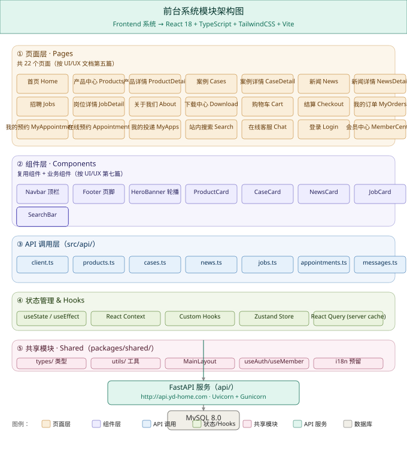
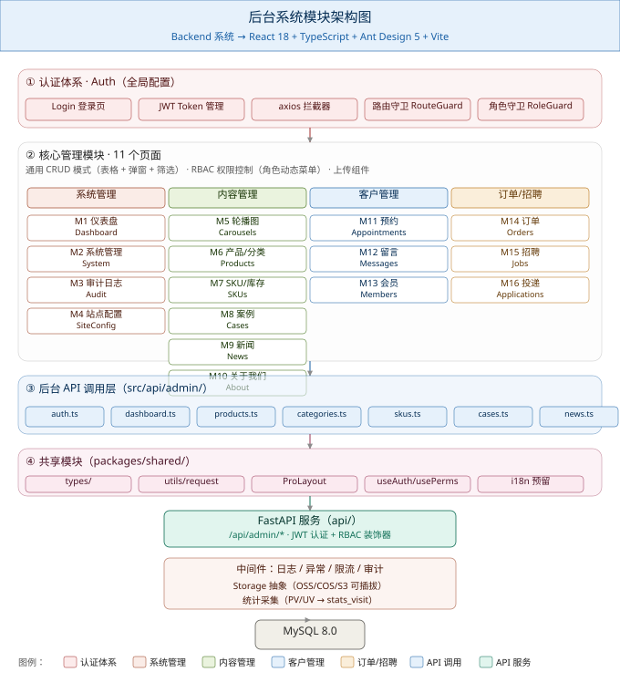
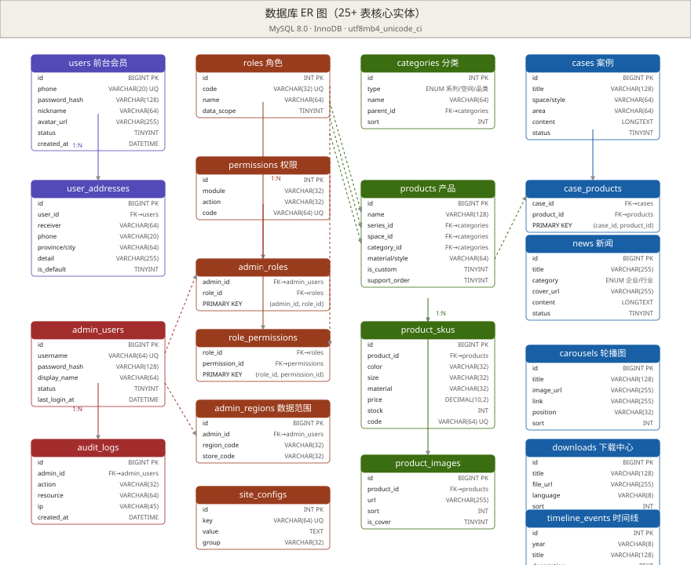

YD家居平台 · 开发技术文档
版本：v1.1.1 ｜ 日期：2026-08-20 ｜ 状态：依据 PRD v1.2 + UI/UX 设计规格文档（v1.0）+ 数据库设计文档 v1.1 同步更新
角色：架构通（Software Architect）｜ 范围：前后端开发流程、接口设计、数据库设计、前后端工程实现
引用文档：PRD_企业家居官网及后台管理系统.md、UI文档/UI-UX设计规格文档.md、开发文档/数据库设计文档.md、原型/prototype_*.html（14 个交互原型）v1.1 同步说明：依据数据库设计文档 v1.1 同步更新 §2.3.2 products 表（新增 product_code / other_images_json / is_top / status 三态枚举 / chk_products_draft_no_top）、§2.3.3 news 表（新增 is_recommend / is_published / expire_at / 两条 CHECK 约束）、§4.3.2/§4.3.3 产品接口响应、§4.3.7/§4.3.8 新闻接口响应。
v1.1.1 同步说明（2026-08-20）：依据「开发工具」清单调整，移除 Docker 依赖：
- §6.1.1 必需工具 → 删除 Docker 行，新增 MySQL/Redis 本机安装说明
- §6.1.2 本地启动 → 步骤 3 改为「本机 MySQL+Redis」或「Lite 模式」
- §6.1.3 → 由「Docker Compose」改为「本机依赖服务（无 Docker）」
- §6.1.4（新增） → Lite 模式（DB_TYPE=sqlite）切换说明
- 附录 C「开发工具」表 → 删除 docker 行
- §1.6 目录结构 → 移除 Dockerfile / docker-compose.yml
- §6.5.1 CI services → 明确注释为 GitHub Actions 内置，与本机无关
- 后续网站功能扩展沿用本工具清单与 Lite 模式
目录
- 第 0 章 · 文档说明
- 第 1 章 · 系统总体架构
- 第 2 章 · 数据库设计
- 第 3 章 · 后端设计（FastAPI）
- 第 4 章 · 接口设计（REST API）
- 第 5 章 · 前端设计（React）
- 第 6 章 · 开发流程
- 附录 A · 错误码表
- 附录 B · 环境变量清单
- 附录 C · 第三方依赖清单
- 附录 D · 关键业务时序图
第 0 章 · 文档说明
0.1 文档信息
| 项 | 内容 |
|---|---|
| 产品名称 | YD家居平台（前台展示系统 + 后台管理系统） |
| 文档版本 | v1.2 |
| 创建日期 | 2026-08-18 |
| 撰写依据 | PRD v1.2 + UI/UX 设计规格文档 v1.1 + 14 个高保真交互原型 |
| 目标读者 | 前端工程师、后端工程师、DBA、测试工程师、技术负责人 |
| 一期范围 | 前台全模块 + 后台全模块（详见 PRD §2.4） |
| 本版更新 | v1.2（2026-08-21）：① §5.2 后台管理系统补「分类管理」页与路由；② §4.5 产品管理接口补充说明（PUT 部分更新、sort DESC、GET 详情 get_admin_product）；③ 仪表盘图表 ECharts 实现说明（src/vendor 引入） |
0.2 阅读对象与使用方式
| 角色 | 重点阅读章节 |
|---|---|
| 前端工程师 | 第 5 章、附录 C 依赖清单、UI/UX 文档第七篇组件库 |
| 后端工程师 | 第 3 章、第 4 章、附录 A 错误码表 |
| DBA | 第 2 章、附录 C |
| 测试工程师 | 第 4 章接口契约、第 6 章测试策略 |
| 技术负责人 | 第 1 章 ADR、第 6 章开发流程与里程碑 |
0.3 术语表
| 术语 | 含义 |
|---|---|
| RBAC | Role-Based Access Control，基于角色的访问控制 |
| JWT | JSON Web Token，无状态会话令牌 |
| SLA | Service Level Agreement，服务等级协议 |
| SKU | Stock Keeping Unit，最小存货单位（颜色×尺寸×材质组合） |
| 软删除 | 不物理删除数据，通过状态字段标记（is_deleted / status=0） |
| 数据范围 | 管理员绑定的区域/门店范围，服务端按此过滤数据可见性 |
| 关键词应答 | 在线客服的规则匹配型自动回复（命中关键词返回预设答案） |
| ADR | Architecture Decision Record，架构决策记录 |
| Monorepo | 单一仓库管理多个子项目（前台/后台/共享） |
0.4 范围（In / Out）
In（一期包含）：
- 前台全部模块（首页、产品中心、SKU 详情、案例、新闻、招聘投递、关于我们含联系我们、下载中心、在线预约、在线客服、站内搜索、购物车与结算、我的订单、我的预约、我的投递、会员中心）
- 后台全部模块（登录、仪表盘、轮播图、产品/分类/SKU、案例、新闻、招聘/投递、关于、预约、留言、订单、系统管理含角色/权限/审计/站点配置）
- 细粒度权限（按模块 + 操作）、数据隔离（多区域/多门店）、审计日志
- 移动端响应式适配
- 关键业务时序：登录鉴权、下单/支付、投递 5 阶段、预约线索
Out（本期不做，参考 PRD §2.4）：
- 多语言（中英文切换，UI 文档已移除入口）
- SEO 全套（meta/sitemap/JSON-LD）
- 支付正式对账（保留回调接口占位，二期对接）
- 完整会员营销（积分/优惠券/活动）
- 生成式 AI 客服（保留关键词应答）
- 小程序 / App 原生端
0.5 文档约定
- API 路径：所有接口以
/api/v1为前缀（v1 为本期稳定版）。 - 认证头：前台会员用
Authorization: Bearer <jwt>，后台管理员用Authorization: Bearer <admin_jwt>。 - 时间格式：ISO 8601（
2026-08-18T10:30:00+08:00），所有时间以东八区为基准。 - 金额：单位为分（
amount_cents整型），响应中同时返回amount_yuan（字符串，保留 2 位小数）。 - 命名：表名
snake_case复数（如users/product_skus），字段snake_case单数，前端组件PascalCase。
第 1 章 · 系统总体架构
1.1 架构概览
YD家居平台采用前后端分离 + 双前端的标准企业级架构：
┌──────────────────────────────────────────────────────────────┐
│ 用户层 (Users) │
│ C 端消费者 · B 端客户 · 求职者 · 后台 5 类角色管理员 │
└──────────────────────────────────────────────────────────────┘
│ │
┌──────▼──────┐ ┌─────▼─────┐
│ 前台展示系统 │ │ 后台管理系统 │
│ React+Tailwind│ │React+AntD │
│ Vite 5 │ │ Vite 5 │
│ 端口 3000 │ │ 端口 3001 │
└──────┬───────┘ └─────┬─────┘
│ HTTPS │ HTTPS
│ /api/v1/* │ /api/v1/admin/*
└─────────────┬───────────────────────┘
│
┌───────▼────────┐
│ FastAPI 服务 │ ← 单体应用，模块化分层
│ Uvicorn │
│ 端口 8000 │
└───────┬────────┘
│
┌─────────────┼─────────────┐
│ │ │
┌──────▼──────┐ ┌────▼────┐ ┌──────▼──────┐
│ MySQL 8.0 │ │ Redis │ │ 对象存储 │
│ 主库 + 备份 │ │ 缓存 │ │ OSS/COS/S3 │
│ 端口 3306 │ │ 端口 │ │ + CDN 加速 │
│ │ │ 6379 │ │ │
└──────────────┘ └────────┘ └──────────────┘
核心特征：
- 双前端独立部署：前台（
yd-home-web，端口 3000）与后台（yd-admin-web，端口 3001）独立构建、部署、CDN 分发。 - 统一 API 网关：FastAPI 单体应用统一提供
/api/v1（前台）与/api/v1/admin（后台）两套路由，共享底层 service/repository 层。 - 共享代码层：
packages/shared维护 TypeScript 类型定义、工具函数、请求封装、设计 Token，前后端跨应用复用。 - 无状态后端：FastAPI 不保存会话状态（JWT 自包含），便于横向扩缩容。
- 可插拔存储：对象存储抽象
Storage接口（OSS/COS/S3 可配置），本地开发用本地磁盘。
1.2 前台与后台模块架构图
下图分别展示前台展示系统与后台管理系统的模块架构（与 UI/UX 文档第三/四篇对应）。
前台系统模块架构图（22 个页面 + 组件 + API 调用 + 状态 + 共享模块）：

后台系统模块架构图（认证 + 16 个管理模块 + API 调用 + 共享模块）：

关键设计说明：
- 前台按 页面 → 组件 → API 调用 → 状态/共享 的单向依赖流向，组件层不直接调用 API，必须经 API 调用层封装。
- 后台按 认证（拦截）→ 16 个模块 → API 调用 → 共享 结构，认证体系对所有模块生效，路由守卫 + 角色守卫双重校验。
- 双前端共用
packages/shared中的types/（TS 类型）、utils/request.ts（请求封装）、utils/format.ts（格式化函数），减少重复代码。
1.3 C4 架构视图
采用 C4 模型描述系统架构，自顶向下四个层次。
1.3.1 系统上下文图（Level 1）
graph TB
User["👤 前台用户<br/>C 端 / B 端 / 求职者"]
Admin["👨💼 后台管理员<br/>5 类角色"]
Web["YD家居<br/>平台系统"]
Pay["支付网关<br/>微信/支付宝<br/>(二期接入)"]
SMS["短信网关<br/>(验证码/通知)"]
OSS["对象存储<br/>OSS/COS/S3"]
Analytics["统计服务<br/>(PV/UV)"]
User -->|"浏览/下单/预约"| Web
Admin -->|"内容运营/订单处理"| Web
Web -->|"图片/视频存储"| OSS
Web -.->|"支付回调(预留)"| Pay
Web -.->|"短信通知(预留)"| SMS
Web -->|"访问埋点"| Analytics
1.3.2 容器图（Level 2）
graph TB
subgraph "客户端"
FE_W["前台 Web<br/>React+Tailwind<br/>SSR 可选"]
FE_A["后台 Web<br/>React+AntD<br/>SPA"]
end
subgraph "服务端"
API["FastAPI 应用<br/>Python 3.11+<br/>Uvicorn"]
Worker["后台 Worker<br/>Celery/Arq<br/>(统计/邮件)"]
end
subgraph "数据层"
DB[("MySQL 8.0<br/>主库 + 备份")]
Cache[("Redis 7<br/>会话/限流/缓存")]
Store[("对象存储<br/>图片/PDF")]
end
subgraph "基础设施"
CDN["CDN<br/>静态资源"]
Nginx["Nginx<br/>反向代理"]
end
FE_W -->|"HTTPS"| Nginx
FE_A -->|"HTTPS"| Nginx
Nginx --> API
API --> DB
API --> Cache
API --> Store
Worker --> DB
Worker --> Cache
Store -.->|"CDN 回源"| CDN
1.4 技术栈选型
| 层 | 选型 | 备选 | 关键理由 |
|---|---|---|---|
| 后端语言 | Python 3.11+ | - | FastAPI 要求 3.8+，3.11+ 性能与类型注解更优 |
| 后端框架 | FastAPI 0.110+ | Flask / Django REST | 原生异步、自动 OpenAPI、Pydantic 强类型、与 SQLAlchemy 2.0 适配最佳 |
| 数据库 | MySQL 8.0 | PostgreSQL 16 | 国内运维生态成熟；utf8mb4_unicode_ci；JSON 字段够用；团队熟悉 |
| ORM | SQLAlchemy 2.0 | Tortoise / 裸 SQL | FastAPI 事实标准，Alembic 迁移成熟，类型友好 |
| 迁移 | Alembic | - | SQLAlchemy 官方迁移工具 |
| 缓存/会话 | Redis 7 | - | 会话黑名单、限流计数器、热点缓存 |
| 前台框架 | React 18 + TypeScript 5 | Vue 3 | UI/UX 文档已锁定；生态丰富 |
| 前台 UI | Tailwind CSS 3.4 | - | UI/UX 文档第二篇设计 Token 全部基于 Tailwind 实现 |
| 前台构建 | Vite 5 | Next.js (SSR) | 首期不做 SSR（PRD §7.4 SEO Out）；SPA 足够 |
| 前台路由 | React Router 6 | TanStack Router | 生态成熟、文档齐全 |
| 前台状态 | Zustand + React Query | Redux Toolkit | 轻量、TS 友好；React Query 解决服务端缓存与请求去重 |
| 后台框架 | React 18 + TypeScript 5 | - | 与前台统一技术栈 |
| 后台 UI | Ant Design 5 | Arco Design | UI/UX 文档第三篇锁定 AntD，组件库最完整 |
| 后台布局 | ProLayout / 自研 | - | 标准企业级布局（侧边栏 + 顶栏 + 内容区） |
| 状态管理 | Zustand | - | 与前台一致 |
| HTTP 客户端 | Axios + 拦截器 | - | 拦截器统一处理 JWT 注入、错误码、loading |
| 对象存储 | 抽象 Storage 接口 | 直连云厂商 | 本地开发用本地磁盘 mock，生产切云 |
| 支付 | 微信 / 支付宝（占位） | - | PRD §2.4 Out，先预留接口 |
| CI/CD | GitHub Actions | GitLab CI | 与代码仓库同源 |
| 监控 | Sentry（错误） + Prometheus（指标） | - | 开源、主流 |
| 测试 | pytest（后端） + Vitest（前端） + Playwright（E2E） | - | 三层覆盖 |
1.5 部署架构
graph LR
subgraph "用户"
U[用户浏览器]
end
subgraph "CDN/WAF"
CDN[CloudFlare / 腾讯云 CDN]
end
subgraph "云服务器 (阿里云/腾讯云)"
LB[负载均衡 SLB]
NG1[Nginx 1<br/>前台静态资源]
NG2[Nginx 2<br/>后台静态资源]
API1[FastAPI 1<br/>Uvicorn]
API2[FastAPI 2<br/>Uvicorn]
API3[FastAPI 3<br/>Uvicorn]
end
subgraph "数据服务"
RDS[(RDS MySQL 8.0<br/>主从)]
REDIS[(Redis 7<br/>主从)]
OSS[(对象存储 OSS)]
end
U -->|HTTPS| CDN
CDN -->|静态资源| NG1
CDN -->|静态资源| NG2
CDN -->|API 请求| LB
LB --> API1
LB --> API2
LB --> API3
API1 --> RDS
API1 --> REDIS
API1 --> OSS
部署清单：
| 资源 | 规格（一期） | 数量 | 用途 |
|---|---|---|---|
| 云服务器 | 4C8G | 3 | FastAPI 节点（Gunicorn + Uvicorn worker） |
| 云服务器 | 2C4G | 2 | Nginx 反向代理 |
| RDS MySQL | 4C16G 100G SSD | 1 主 1 从 | 主库 + 备份 |
| Redis | 2C4G 4G | 1 主 1 从 | 会话/缓存/限流 |
| 对象存储 | 标准存储 500G | 1 bucket | 图片/PDF |
| CDN | 流量包 500G/月 | 1 | 静态资源加速 |
| 域名 SSL | - | 2 | api.yd-home.com / admin.yd-home.com |
1.6 代码仓库与目录结构
采用 monorepo（单仓多包）管理，pnpm workspace + Python 子项目。
yd-home-platform/ # 仓库根目录
├── .github/ # CI 配置
│ └── workflows/
│ ├── fe-build.yml
│ └── api-test.yml
├── apps/ # 独立部署应用
│ ├── web/ # 前台展示系统
│ │ ├── src/
│ │ │ ├── pages/ # 页面（按路由）
│ │ │ │ ├── Home.tsx
│ │ │ │ ├── products/
│ │ │ │ ├── cases/
│ │ │ │ ├── news/
│ │ │ │ ├── jobs/
│ │ │ │ ├── about/
│ │ │ │ ├── member/
│ │ │ │ └── ...
│ │ │ ├── components/ # 业务组件
│ │ │ │ ├── layout/ # Navbar / Footer / MainLayout
│ │ │ │ ├── business/ # ProductCard / Timeline / Carousel
│ │ │ │ └── feedback/ # Toast / Modal / Loading
│ │ │ ├── api/ # API 调用层
│ │ │ │ ├── client.ts # axios 实例 + 拦截器
│ │ │ │ ├── products.ts
│ │ │ │ ├── cases.ts
│ │ │ │ ├── news.ts
│ │ │ │ ├── jobs.ts
│ │ │ │ ├── orders.ts
│ │ │ │ ├── member.ts
│ │ │ │ ├── upload.ts
│ │ │ │ └── search.ts
│ │ │ ├── hooks/ # 自定义 Hooks
│ │ │ │ ├── useAuth.ts
│ │ │ │ ├── useMember.ts
│ │ │ │ └── useDebounce.ts
│ │ │ ├── stores/ # Zustand store
│ │ │ │ ├── cart.ts
│ │ │ │ └── ui.ts
│ │ │ ├── router.tsx
│ │ │ ├── App.tsx
│ │ │ └── main.tsx
│ │ ├── public/
│ │ ├── tailwind.config.js # 设计 Token（UI/UX 文档第二篇）
│ │ ├── vite.config.ts
│ │ ├── tsconfig.json
│ │ └── package.json
│ │
│ └── admin/ # 后台管理系统
│ ├── src/
│ │ ├── pages/ # 16 个管理模块
│ │ │ ├── login/
│ │ │ ├── dashboard/
│ │ │ ├── carousels/
│ │ │ ├── products/
│ │ │ ├── categories/
│ │ │ ├── skus/
│ │ │ ├── cases/
│ │ │ ├── news/
│ │ │ ├── jobs/
│ │ │ ├── applications/
│ │ │ ├── about/
│ │ │ ├── appointments/
│ │ │ ├── messages/
│ │ │ ├── orders/
│ │ │ ├── system/ # 角色/管理员/审计
│ │ │ └── site-config/
│ │ ├── layouts/ # ProLayout / 空白布局
│ │ ├── components/
│ │ ├── api/admin/ # 后台 API 调用层
│ │ │ ├── auth.ts
│ │ │ ├── dashboard.ts
│ │ │ └── ...
│ │ ├── hooks/
│ │ ├── stores/
│ │ ├── router.tsx # 含路由守卫
│ │ └── main.tsx
│ ├── vite.config.ts
│ └── package.json
│
├── packages/ # 共享包
│ └── shared/ # 前后端共享
│ ├── src/
│ │ ├── types/ # TypeScript 类型（与 Pydantic 同步）
│ │ │ ├── product.ts
│ │ │ ├── order.ts
│ │ │ ├── user.ts
│ │ │ └── index.ts
│ │ ├── utils/
│ │ │ ├── request.ts # fetch 封装（无 axios 依赖）
│ │ │ ├── format.ts # 金额/日期/手机号
│ │ │ └── validate.ts
│ │ └── constants/
│ │ ├── error-codes.ts # 错误码常量（前后端同步）
│ │ └── permissions.ts # 权限码常量
│ └── package.json
│
├── api/ # FastAPI 后端
│ ├── app/
│ │ ├── main.py # 入口
│ │ ├── core/ # 核心配置
│ │ │ ├── config.py # Settings (pydantic-settings)
│ │ │ ├── security.py # JWT / 密码哈希
│ │ │ ├── database.py # SQLAlchemy 引擎
│ │ │ ├── redis.py
│ │ │ ├── storage.py # 存储抽象
│ │ │ └── exceptions.py # 自定义异常
│ │ ├── api/ # 路由层
│ │ │ ├── v1/
│ │ │ │ ├── __init__.py
│ │ │ │ ├── public/ # 前台公开
│ │ │ │ │ ├── home.py
│ │ │ │ │ ├── products.py
│ │ │ │ │ └── ...
│ │ │ │ ├── member/ # 前台会员
│ │ │ │ │ ├── auth.py
│ │ │ │ │ ├── orders.py
│ │ │ │ │ └── ...
│ │ │ │ └── admin/ # 后台
│ │ │ │ ├── auth.py
│ │ │ │ ├── dashboard.py
│ │ │ │ └── ...
│ │ ├── services/ # 业务层
│ │ │ ├── product_service.py
│ │ │ ├── order_service.py
│ │ │ └── ...
│ │ ├── repositories/ # 仓储层（封装 SQLAlchemy）
│ │ │ ├── product_repo.py
│ │ │ └── ...
│ │ ├── models/ # SQLAlchemy ORM 模型
│ │ │ ├── user.py
│ │ │ ├── product.py
│ │ │ └── ...
│ │ ├── schemas/ # Pydantic 校验
│ │ │ ├── product.py
│ │ │ └── ...
│ │ ├── middleware/ # 中间件
│ │ │ ├── audit.py
│ │ │ ├── rate_limit.py
│ │ │ └── logging.py
│ │ └── utils/
│ ├── alembic/ # 数据库迁移
│ │ ├── versions/
│ │ └── env.py
│ ├── tests/
│ │ ├── unit/
│ │ ├── integration/
│ │ └── conftest.py
│ ├── pyproject.toml # 依赖（Poetry/uv）
│ ├── alembic.ini
│ └── .env.example # 含 DB_TYPE=mysql/sqlite 切换项
│
├── docs/ # 文档
│ ├── PRD_企业家居官网及后台管理系统.md
│ ├── UI文档/
│ └── 开发文档/
│ ├── figures/
│ ├── 开发技术文档.md # 本文档
│ └── 开发技术文档.html # HTML 浏览版
│
├── scripts/ # 脚本
│ ├── seed.py # 种子数据
│ └── backup.sh
│
├── pnpm-workspace.yaml
└── README.md
仓库不包含
Dockerfile与docker-compose.yml：本项目所有环境均走原生依赖或 Lite 模式（详见 §6.1.3 / §6.1.4）。后续网站功能扩展沿用此约定。
1.7 架构决策记录（ADR）
ADR 模板：Status（Proposed/Accepted/Deprecated/Superseded）| Context | Decision | Consequences
ADR-001 · 双前端独立部署（拆分 React 应用）
Status: Accepted
Context：
PRD §4.1 明确"前后端分离"；UI/UX 文档采用两套设计系统（前台 Tailwind、后台 AntD）。若采用单一 monorepo React 应用 + 路由切换，技术上可行但工程复杂（双主题切换、AntD 体积大拖慢前台首屏、权限控制耦合）。
Decision：
采用 monorepo 双独立应用 架构：
- 前台
apps/web：React + Tailwind，无 AntD 依赖 - 后台
apps/admin：React + AntD 5 - 共享
packages/shared：仅 TypeScript 类型、工具函数、设计 Token 常量 - 各自独立
package.json、独立vite.config.ts、独立 CDN 部署
Consequences：
- ✅ 前台首屏体积小（无 AntD 100KB+ 依赖），符合 UI/UX 性能要求
- ✅ 双主题独立演进，互不干扰
- ✅ 后台可独立做权限管理、不暴露给前台
- ⚠️ 类型同步需在
packages/shared统一管理，后端 Pydantic Schema 变动需同步 TS 类型 - ⚠️ 仓库体积增大（两个 node_modules），需 pnpm workspace 治理
ADR-002 · 数据库选型：MySQL 8.0
Status: Accepted
Context：
PRD §4.2 仅规定"关系型数据库 + 对象存储"，未指定具体 DBMS。
Decision：
采用 MySQL 8.0（InnoDB 引擎，utf8mb4_unicode_ci 字符集）。
Consequences：
- ✅ 国内运维生态成熟，RDS 直接支持，DBA 团队熟悉
- ✅ utf8mb4 支持完整 Unicode（含 emoji），适配会员昵称
- ✅ JSON 字段类型支持部分非结构化数据（如扩展属性）
- ⚠️ 全文检索需借助 Elasticsearch（PRD Out 范围未涉及）
- ⚠️ 不支持数组/枚举原生类型，需在应用层维护
- 备选 PostgreSQL 16 优势（更强 JSONB、更完整枚举）暂未采用，预留二期评估
ADR-003 · 认证方案：JWT + 图形验证码（双通道）
Status: Accepted
Context：
PRD §6.1 要求"账号密码 + 图形验证码登录"；§4.2 提到"JWT/Session 会话"。需在无状态与服务端可控之间平衡。
Decision：
- 后台管理员：账号密码 + 图形验证码 → 颁发 JWT（
admin_token，有效期 8h）+ Refresh Token（30d） - 前台会员：手机号 + 密码 → 颁发 JWT（
member_token，有效期 7d）+ Refresh Token（90d） - JWT Payload：
{ sub, role, data_scope, exp, iat, jti } - Token 撤销：Redis 维护
jwt_blacklist:{jti}集合，TTL 与 token 一致 - 图形验证码：
/api/v1/admin/captcha颁发，5 分钟有效，5 次错误后强制刷新
Consequences：
- ✅ 无状态，FastAPI 横向扩缩容友好
- ✅ 双 Token 机制减少登录态丢失
- ⚠️ 退出登录需将 jti 写入 Redis 黑名单
- ⚠️ 图形验证码依赖本地 Redis 存储，二期可切换为阿里云验证码服务
ADR-004 · 数据隔离：单库 + 字段过滤（多区域/多门店）
Status: Accepted
Context：
PRD §6.12 要求"管理员绑定区域/门店，数据按范围过滤（多区域/多门店）"，§7.3 强调"权限校验服务端强制执行，数据隔离在服务端按角色范围过滤"。
Decision：
采用 单库单 schema + 字段过滤 方案：
- 所有数据表带
region_code与store_code字段（可空） admin_regions表记录管理员 → 区域/门店的映射data_scope枚举：all（全部）/region（本区域）/store（本门店）/self（本人）- 仓储层（
repositories/）封装apply_data_scope(query, admin)函数自动注入 WHERE 条件 - API 层禁止直接查 ORM，必须经仓储层
Consequences：
- ✅ 单库运维成本低，迁移/备份简单
- ✅ 区域/门店组合灵活，可在 WHERE 条件动态拼接
- ⚠️ 必须强制所有查询走仓储层，否则越权（通过代码 review + 测试用例覆盖）
- 备选"多租户 schema"成本高、跨租户统计复杂，未采用
ADR-005 · 对象存储抽象（可插拔）
Status: Accepted
Context：
PRD §11 风险"图片/PDF 存储依赖对象存储（OSS/COS/S3）与 CDN"。本地开发与生产环境需切换。
Decision：
定义 Storage 抽象接口，提供 3 种实现：
LocalStorage：本地文件系统（开发环境，存储到./uploads/）OSSStorage：阿里云 OSSCOSStorage：腾讯云 COSS3Storage：AWS S3（兼容 S3 协议）
Consequences：
- ✅ 业务代码依赖
Storage接口，切换实现不需改业务 - ✅ 本地开发不依赖云服务，CI/E2E 测试可用 LocalStorage
- ⚠️ 不同云厂商的签名 URL、CDN 缓存策略有差异，抽象层需支持每家特有配置
ADR-006 · 支付预留：仅留接口占位
Status: Accepted
Context：
PRD §2.4 明确支付"Out（本期不做）"，但 PRD §5.12 与 §6.11 需要"对接支付（微信/支付宝，预留）"。
Decision：
- 数据库保留
payments表（订单支付流水） - API 预留
POST /api/v1/orders/{id}/pay与POST /api/v1/payments/callback/{channel}路由 - 实现中返回"支付通道未开通"错误码（
PAYMENT_DISABLED） - 订单状态机包含
paid状态，可通过后台手动"标记已付款"实现联调
Consequences：
- ✅ 一期可完整联调"下单 → 标记付款 → 发货 → 完成"闭环
- ✅ 二期对接支付时只需实现具体通道，无需改业务逻辑
- ⚠️ 一期不做真实支付对账，需在 UI 提示"演示环境"
ADR-007 · 前后端类型同步：Pydantic → TypeScript 自动生成
Status: Accepted
Context：
ADR-001 决定 monorepo 双前端 + FastAPI 后端，前后端类型同步是痛点（手抄易错）。
Decision：
- 后端 Pydantic Schema 加
@json_schema导出 - 用
datamodel-code-generator或pydantic2ts从 OpenAPI Schema 自动生成packages/shared/types/*.ts - CI 中加校验步骤：若生成的 TS 与 Pydantic 不一致则 PR fail
Consequences：
- ✅ 类型 100% 一致，避免运行时类型错误
- ✅ 后端改字段后前端 TS 编译即可发现问题
- ⚠️ 引入构建工具链，前端开发者需了解生成流程
ADR 持续追加，命名规则
ADR-NNN · 标题，记录到本文档。
1.8 关键设计原则
| 原则 | 落地方式 |
|---|---|
| 前后端分离 | FastAPI 仅返回 JSON，前端路由与渲染独立 |
| RESTful 规范 | 资源名词复数、HTTP 方法语义化、统一响应格式（详见第 4 章） |
| 无状态后端 | JWT 自包含，Redis 仅用于黑名单/缓存/限流 |
| 服务端强校验 | Pydantic 校验请求体、权限装饰器拦截、仓储层数据范围过滤 |
| 类型优先 | 后端 Pydantic + 前端 TypeScript，CI 自动同步 |
| 可观测性 | 结构化日志、错误埋点（Sentry）、关键指标 Prometheus |
| 渐进式增强 | 一期功能完整，二期平滑扩展（支付/SEO/会员营销） |
第 2 章 · 数据库设计
2.1 设计约定
2.1.1 命名规范
| 类别 | 规范 | 示例 |
|---|---|---|
| 表名 | snake_case 复数 |
users / product_skus / job_applications |
| 字段名 | snake_case 单数 |
user_id / created_at / is_deleted |
| 主键 | id（BIGINT UNSIGNED AUTO_INCREMENT） |
id |
| 外键 | {关联表单数}_id |
user_id / product_id |
| 唯一约束 | {字段名} 或 {字段1}_{字段2} |
phone / username |
| 索引 | idx_{表名}_{字段} / uniq_{表名}_{字段} |
idx_orders_user_id / uniq_users_phone |
| 时间字段 | created_at / updated_at / deleted_at |
DATETIME(3) 毫秒精度 |
| 状态字段 | status（TINYINT 枚举值） |
status TINYINT NOT NULL DEFAULT 1 |
| 布尔字段 | is_{状态} 或 has_{属性} |
is_deleted / is_default |
2.1.2 通用字段
所有业务表（除关联表外）必须包含：
id BIGINT UNSIGNED NOT NULL AUTO_INCREMENT -- 主键
created_at DATETIME(3) NOT NULL DEFAULT CURRENT_TIMESTAMP(3)
updated_at DATETIME(3) NOT NULL DEFAULT CURRENT_TIMESTAMP(3) ON UPDATE CURRENT_TIMESTAMP(3)
deleted_at DATETIME(3) NULL -- 软删除时间（NULL = 未删除）
is_deleted TINYINT(1) NOT NULL DEFAULT 0 -- 软删除标记（双保险）
为什么双字段？：
deleted_at用于范围查询（WHERE deleted_at IS NULL），is_deleted用于 JOIN 条件简化（部分老 SQL 不支持IS NULL）。
2.1.3 字符集与时区
- 字符集：
utf8mb4/ 排序：utf8mb4_unicode_ci - 时区：数据库服务器与连接均设为
Asia/Shanghai（UTC+8），应用层不跨时区转换 - 金额：存储为整型分（
amount_cents BIGINT），应用层展示时除以 100
2.1.4 软删除策略
- 列表查询一律过滤
WHERE is_deleted = 0 - 关联查询使用 LEFT JOIN +
ON ... AND a.is_deleted = 0 - 硬删除仅限敏感数据（用户隐私、订单留痕要求不可硬删）
2.1.5 数据隔离字段约定（审核新增）
数据隔离（PRD §6.12 / §7.3）不是所有表都适用，仅以下"区域敏感"表需要 region_code / store_code：
| 表 | region_code | store_code | 说明 |
|---|---|---|---|
orders |
✅ | ✅ | 按收货省份/归属门店 |
appointments |
✅ | ✅ | 预约客户区域/门店 |
messages |
✅ | ✅ | 留言客户区域/门店 |
job_applications |
✅ | ⭕ | 按投递区域（可选） |
products 等内容表 |
⭕ | ⭕ | 内容全局共享，不做区域隔离 |
审核修正：原 §2.6 的
apply_data_scope()假设所有表都有region_code/store_code，但实际只有订单/预约/留言/投递需要区域隔离，内容表（产品/案例/新闻/招聘）应全局可见。仓储层按"表是否标记IS_DATA_SCOPED"决定是否注入过滤条件，避免对内容表误加空条件导致查不到数据。
2.2 ER 总览图
ER 图保存位置：
figures/er-diagram.svg（详见附图）

ER 图说明：
- 颜色区分 5 个域：紫色 = 前台用户域、红色 = 后台用户域、橙色 = 权限/配置、绿色 = 产品域、蓝色 = 内容域
- 业务/订单域（订单/预约/留言/招聘/投递）字段较多，详见 §2.3 数据字典详细表结构
- 实线表示强外键约束，虚线表示逻辑关联（如 admin_users 通过 admin_roles 与 roles 关联）
- 图幅限制说明：ER 图聚焦核心实体（20 张），业务/订单域 9 张表（
orders / order_items / payments / appointments / messages / chat_keywords / jobs / job_applications / stats_visit）在图中以说明文字呈现，字段级定义以数据字典为准；本文档全量共 32 张表。
核心实体关系概览：
| 关系 | 类型 | 说明 |
|---|---|---|
| users → user_addresses | 1:N | 一个会员多个收货地址 |
| users → orders | 1:N | 一个会员多个订单 |
| users → job_applications | 1:N | 会员投递记录（可匿名投递，但若登录则关联） |
| products → product_skus | 1:N | 一个产品多个 SKU（颜色×尺寸×材质） |
| products → product_images | 1:N | 产品图集 |
| categories → products | 1:N | 三类分类（系列/空间/品类）各一对多产品 |
| products ↔ cases | N:M | 通过 case_products 中间表 |
| orders → order_items → product_skus | 1:N:1 | 订单项关联到具体 SKU |
| admin_users ↔ roles | N:M | 通过 admin_roles 中间表 |
| roles ↔ permissions | N:M | 通过 role_permissions 中间表 |
| admin_users → admin_regions | 1:N | 多区域/多门店绑定 |
| admin_users → audit_logs | 1:N | 操作审计 |
2.3 数据字典
2.3.1 用户与权限域（10 张表）
users 前台会员
| 字段 | 类型 | 约束 | 说明 |
|---|---|---|---|
| id | BIGINT UNSIGNED | PK, AUTO_INCREMENT | 主键 |
| phone | VARCHAR(20) | NOT NULL, UNIQUE | 手机号（登录账号） |
| password_hash | VARCHAR(128) | NOT NULL | bcrypt 哈希 |
| nickname | VARCHAR(64) | NULL | 昵称 |
| avatar_url | VARCHAR(255) | NULL | 头像 URL |
| VARCHAR(128) | NULL | 邮箱（可选） | |
| gender | TINYINT | NULL | 0 未知 1 男 2 女 |
| status | TINYINT | NOT NULL DEFAULT 1 | 0 禁用 1 正常 |
| failed_attempts | TINYINT | NOT NULL DEFAULT 0 | 连续登录失败次数（防爆破，与 admin_users 对齐） |
| locked_until | DATETIME(3) | NULL | 锁定到期时间（失败 ≥ 5 次锁定 30 分钟） |
| last_login_at | DATETIME(3) | NULL | 最近登录 |
| created_at | DATETIME(3) | NOT NULL | - |
| updated_at | DATETIME(3) | NOT NULL | - |
| deleted_at | DATETIME(3) | NULL | 软删除 |
| is_deleted | TINYINT(1) | NOT NULL DEFAULT 0 | 软删除标记 |
索引：uniq_phone (phone)，idx_status_created (status, created_at)
审核补充（隐私合规，PRD §7.3 个人信息保护法）：
- 存储：手机号为登录账号，库中明文存储（bcrypt 仅用于密码），但接口响应一律脱敏（
138****8000），仅后台客服/订单处理角色可按需查看完整手机号（受数据范围 + 权限双重限制）；- 加密方案（可选增强）：若后续需要更高安全等级，可将
phone改为phone_encrypted（AES-256-GCM）+phone_index（HMAC-SHA256 哈希用于等值查询），登录时用哈希索引查、解密比对；- 日志脱敏：应用日志、审计日志、异常堆栈中禁止输出完整手机号（统一
mask_phone()工具函数）。
user_addresses 会员收货地址
| 字段 | 类型 | 约束 | 说明 |
|---|---|---|---|
| id | BIGINT UNSIGNED | PK | - |
| user_id | BIGINT UNSIGNED | NOT NULL, FK → users.id | - |
| receiver | VARCHAR(64) | NOT NULL | 收件人姓名 |
| phone | VARCHAR(20) | NOT NULL | 收件人手机 |
| province | VARCHAR(32) | NOT NULL | 省 |
| city | VARCHAR(32) | NOT NULL | 市 |
| district | VARCHAR(32) | NOT NULL | 区/县 |
| detail | VARCHAR(255) | NOT NULL | 详细地址 |
| postal_code | VARCHAR(10) | NULL | 邮编 |
| is_default | TINYINT(1) | NOT NULL DEFAULT 0 | 是否默认地址 |
| created_at | DATETIME(3) | NOT NULL | - |
| updated_at | DATETIME(3) | NOT NULL | - |
索引：idx_user_id (user_id)
admin_users 后台管理员
| 字段 | 类型 | 约束 | 说明 |
|---|---|---|---|
| id | BIGINT UNSIGNED | PK | - |
| username | VARCHAR(64) | NOT NULL, UNIQUE | 登录账号 |
| password_hash | VARCHAR(128) | NOT NULL | bcrypt 哈希 |
| display_name | VARCHAR(64) | NOT NULL | 显示名 |
| avatar_url | VARCHAR(255) | NULL | 头像 |
| VARCHAR(128) | NULL | - | |
| phone | VARCHAR(20) | NULL | - |
| status | TINYINT | NOT NULL DEFAULT 1 | 0 禁用 1 正常 |
| last_login_at | DATETIME(3) | NULL | - |
| last_login_ip | VARCHAR(45) | NULL | - |
| failed_attempts | TINYINT | NOT NULL DEFAULT 0 | 连续失败次数 |
| locked_until | DATETIME(3) | NULL | 锁定到期时间 |
| created_at | DATETIME(3) | NOT NULL | - |
| updated_at | DATETIME(3) | NOT NULL | - |
| deleted_at | DATETIME(3) | NULL | - |
| is_deleted | TINYINT(1) | NOT NULL DEFAULT 0 | - |
索引：uniq_username (username)，idx_status (status)
roles 角色
| 字段 | 类型 | 约束 | 说明 |
|---|---|---|---|
| id | INT UNSIGNED | PK | - |
| code | VARCHAR(32) | NOT NULL, UNIQUE | 角色编码（admin/editor/product/service/order） |
| name | VARCHAR(64) | NOT NULL | 角色名 |
| data_scope | TINYINT | NOT NULL DEFAULT 4 | 1 all 2 region 3 store 4 self |
| description | VARCHAR(255) | NULL | 描述 |
| is_builtin | TINYINT(1) | NOT NULL DEFAULT 0 | 是否内置（不可删） |
| created_at | DATETIME(3) | NOT NULL | - |
| updated_at | DATETIME(3) | NOT NULL | - |
permissions 权限
| 字段 | 类型 | 约束 | 说明 |
|---|---|---|---|
| id | INT UNSIGNED | PK | - |
| module | VARCHAR(32) | NOT NULL | 模块名（如 products / orders） |
| action | VARCHAR(32) | NOT NULL | 操作（view / create / update / delete / export） |
| code | VARCHAR(64) | NOT NULL, UNIQUE | 权限码（如 products:create） |
| name | VARCHAR(64) | NOT NULL | 权限名 |
| created_at | DATETIME(3) | NOT NULL | - |
索引：uniq_module_action (module, action)
admin_roles 管理员-角色关联
| 字段 | 类型 | 约束 | 说明 |
|---|---|---|---|
| admin_id | BIGINT UNSIGNED | NOT NULL, FK → admin_users.id | - |
| role_id | INT UNSIGNED | NOT NULL, FK → roles.id | - |
| PRIMARY KEY | (admin_id, role_id) | 复合主键 |
role_permissions 角色-权限关联
| 字段 | 类型 | 约束 | 说明 |
|---|---|---|---|
| role_id | INT UNSIGNED | NOT NULL, FK → roles.id | - |
| permission_id | INT UNSIGNED | NOT NULL, FK → permissions.id | - |
| PRIMARY KEY | (role_id, permission_id) | 复合主键 |
admin_regions 管理员数据范围
| 字段 | 类型 | 约束 | 说明 |
|---|---|---|---|
| id | BIGINT UNSIGNED | PK | - |
| admin_id | BIGINT UNSIGNED | NOT NULL, FK → admin_users.id | - |
| region_code | VARCHAR(32) | NOT NULL | 区域编码 |
| store_code | VARCHAR(32) | NULL | 门店编码（NULL = 区域内全部） |
| created_at | DATETIME(3) | NOT NULL | - |
索引：idx_admin_id (admin_id)，idx_region_store (region_code, store_code)
audit_logs 操作审计日志
| 字段 | 类型 | 约束 | 说明 |
|---|---|---|---|
| id | BIGINT UNSIGNED | PK | - |
| admin_id | BIGINT UNSIGNED | NULL, FK → admin_users.id | 操作人（NULL = 系统） |
| username | VARCHAR(64) | NOT NULL | 操作人账号（冗余防删除追溯） |
| action | VARCHAR(32) | NOT NULL | login / create / update / delete / export / grant |
| resource | VARCHAR(64) | NOT NULL | 资源类型（product / order / role） |
| resource_id | BIGINT UNSIGNED | NULL | 资源 ID |
| method | VARCHAR(10) | NOT NULL | HTTP 方法 |
| path | VARCHAR(255) | NOT NULL | 请求路径 |
| payload | JSON | NULL | 请求/响应摘要（敏感字段过滤） |
| ip | VARCHAR(45) | NOT NULL | 操作 IP |
| user_agent | VARCHAR(255) | NULL | UA |
| status_code | SMALLINT | NOT NULL | HTTP 状态码 |
| duration_ms | INT | NOT NULL | 处理耗时 |
| created_at | DATETIME(3) | NOT NULL | - |
索引：idx_admin_id (admin_id)，idx_resource (resource, resource_id)，idx_created_at (created_at)
审核补充（敏感数据脱敏）：
payload字段在写入前必须过滤以下字段（正则脱敏后存储）：password、password_hash、token、Authorization头、完整手机号（保留前 3 后 4 位，如138****8000）、完整身份证号。审计日志保留期为 3 年，到期归档至冷存储。
site_configs 站点配置
| 字段 | 类型 | 约束 | 说明 |
|---|---|---|---|
| id | INT UNSIGNED | PK | - |
| key | VARCHAR(64) | NOT NULL, UNIQUE | 配置键（如 site.name） |
| value | TEXT | NOT NULL | 配置值 |
| group | VARCHAR(32) | NOT NULL | 分组（basic / contact / social / seo） |
| description | VARCHAR(255) | NULL | 说明 |
| updated_by | BIGINT UNSIGNED | NULL, FK → admin_users.id | 最后修改人 |
| created_at | DATETIME(3) | NOT NULL | - |
| updated_at | DATETIME(3) | NOT NULL | - |
2.3.2 产品域（4 张表）
categories 分类（系列/空间/品类）
| 字段 | 类型 | 约束 | 说明 |
|---|---|---|---|
| id | INT UNSIGNED | PK | - |
| type | ENUM('series','space','category') | NOT NULL | 类型 |
| name | VARCHAR(64) | NOT NULL | 中文名 |
| name_en | VARCHAR(64) | NULL | 英文名（二期多语言） |
| icon | VARCHAR(255) | NULL | 图标 URL |
| parent_id | INT UNSIGNED | NULL, FK → categories.id | 父级 ID（支持树形，自引用） |
| sort | INT | NOT NULL DEFAULT 0 | 排序 |
| status | TINYINT | NOT NULL DEFAULT 1 | 启用状态 |
| created_at | DATETIME(3) | NOT NULL | - |
| updated_at | DATETIME(3) | NOT NULL | - |
索引：idx_type_status (type, status)，idx_parent (parent_id)
审核补充：
parent_id补自引用 FK；type与parent_id的组合应在应用层校验（父子同类型，如"系列"的父级必须为 NULL——分类树深度一期限制为 2 级）。
products 产品
| 字段 | 类型 | 约束 | 说明 |
|---|---|---|---|
| id | BIGINT UNSIGNED | PK | - |
| product_code | VARCHAR(64) | NOT NULL, UNIQUE | 产品编号（v1.1 新增·全局唯一） |
| name | VARCHAR(128) | NOT NULL | 产品名 |
| subtitle | VARCHAR(255) | NULL | 副标题 |
| series_id | INT UNSIGNED | NULL, FK → categories.id | 所属系列（如胡桃禮，type='series'） |
| space_id | INT UNSIGNED | NULL, FK → categories.id | 所属空间分类 id（type='space'） |
| category_id | INT UNSIGNED | NULL, FK → categories.id | 品类（type='category'，与 space_id/series_id 三选一至少其一） |
| material | VARCHAR(64) | NULL | 材质 |
| style | VARCHAR(64) | NULL | 风格 |
| size_text | VARCHAR(128) | NULL | 尺寸文案 |
| is_custom | TINYINT(1) | NOT NULL DEFAULT 0 | 是否支持定制 |
| support_order | TINYINT(1) | NOT NULL DEFAULT 0 | 是否支持在线下单 |
| tags | JSON | NULL | 标签数组 |
| cover_url | VARCHAR(255) | NULL | 封面图片 URL |
| description | TEXT | NULL | 产品描述（富文本 HTML） |
| specs_json | JSON | NULL | 规格参数（JSON 串，v1.1 命名明确） |
| other_images_json | JSON | NULL | 其它图片 URL（JSON 串，v1.1 新增） |
| sort | INT | NOT NULL DEFAULT 0 | 排序值 |
| status | ENUM | NOT NULL DEFAULT 'draft' | draft=草稿 / on_sale=上架 / off_sale=下架（v1.1 三态枚举） |
| is_top | TINYINT(1) | NOT NULL DEFAULT 0 | 是否置顶（v1.1 新增） |
| view_count | INT | NOT NULL DEFAULT 0 | 浏览量 |
| created_at | DATETIME(3) | NOT NULL | - |
| updated_at | DATETIME(3) | NOT NULL | - |
| deleted_at | DATETIME(3) | NULL | - |
| is_deleted | TINYINT(1) | NOT NULL DEFAULT 0 | - |
索引：
idx_category_status (category_id, status)— 产品中心列表idx_series_status (series_id, status)— 系列筛选idx_space_status (space_id, status)— 空间筛选idx_support_order_status (support_order, status)— 在线下单筛选idx_status_top (status, is_top, sort)— 发布列表（按置顶+排序，v1.1 新增）idx_created (created_at)— 按时间排序FULLTEXT idx_name (name)— 全文检索（中文用 ngram 分词）uniq_product_code (product_code)— 产品编号唯一（v1.1 新增）
必填约束（PRD §6.4 品类 / 适用空间 / 系列 三选一至少其一）——数据库层 CHECK 约束 + 应用层 Service 双重校验：
ALTER TABLE products
ADD CONSTRAINT chk_products_category_or_space
CHECK (category_id IS NOT NULL OR space_id IS NOT NULL OR series_id IS NOT NULL);
-- v1.1 新增：草稿不允许置顶
ALTER TABLE products
ADD CONSTRAINT chk_products_draft_no_top
CHECK (NOT (status = 'draft' AND is_top = 1));
审核补充：原设计将
category_id设为NOT NULL，但 PRD §6.4 明确"必填项 = 品类 或 适用空间"，即只填空间、不填品类（或反之）也是合法的。改为三者至少其一（可同时为 NULL 仅当产品为"系列占位"场景，业务上不建议）。Service 层在ProductService.create/update中同步校验，返回10002 参数校验失败。v1.1 新增：增加
product_code（产品编号，全局唯一，作为对外引用的稳定标识，区别于自增 id）、other_images_json（附属图 JSON 串）、is_top（置顶标识，与sort配合用于发布列表排序）、status由 TINYINT 改为三态 ENUM 便于业务判断，新增 CHECK 防止"草稿置顶"的非法状态。
product_skus 产品 SKU
| 字段 | 类型 | 约束 | 说明 |
|---|---|---|---|
| id | BIGINT UNSIGNED | PK | - |
| product_id | BIGINT UNSIGNED | NOT NULL, FK → products.id | - |
| code | VARCHAR(64) | NOT NULL, UNIQUE | SKU 编码 |
| color | VARCHAR(32) | NULL | 颜色 |
| size | VARCHAR(32) | NULL | 尺寸 |
| material | VARCHAR(32) | NULL | 材质 |
| price_cents | BIGINT | NOT NULL | 价格（分） |
| market_price_cents | BIGINT | NULL | 划线价 |
| stock | INT | NOT NULL DEFAULT 0 | 库存 |
| stock_warning | INT | NOT NULL DEFAULT 10 | 库存预警阈值 |
| sales_count | INT | NOT NULL DEFAULT 0 | 累计销量 |
| image_url | VARCHAR(255) | NULL | SKU 专属图 |
| sort | INT | NOT NULL DEFAULT 0 | - |
| status | TINYINT | NOT NULL DEFAULT 1 | 启用状态 |
| created_at | DATETIME(3) | NOT NULL | - |
| updated_at | DATETIME(3) | NOT NULL | - |
索引：idx_product_status (product_id, status)，uniq_code (code)，idx_stock (stock)
product_images 产品图集
| 字段 | 类型 | 约束 | 说明 |
|---|---|---|---|
| id | BIGINT UNSIGNED | PK | - |
| product_id | BIGINT UNSIGNED | NOT NULL, FK → products.id | - |
| url | VARCHAR(255) | NOT NULL | 图片 URL |
| alt | VARCHAR(128) | NULL | 替代文本 |
| sort | INT | NOT NULL DEFAULT 0 | - |
| is_cover | TINYINT(1) | NOT NULL DEFAULT 0 | 是否封面 |
| created_at | DATETIME(3) | NOT NULL | - |
索引：idx_product_sort (product_id, sort)
2.3.3 内容域（9 张表）
cases 案例
| 字段 | 类型 | 约束 | 说明 |
|---|---|---|---|
| id | BIGINT UNSIGNED | PK | - |
| title | VARCHAR(128) | NOT NULL | 案例标题 |
| subtitle | VARCHAR(255) | NULL | 副标题 |
| space | VARCHAR(64) | NULL | 空间（如 客厅/卧室） |
| style | VARCHAR(64) | NULL | 风格 |
| area | VARCHAR(64) | NULL | 面积/户型 |
| cover_url | VARCHAR(255) | NULL | 封面图 |
| content | LONGTEXT | NOT NULL | 富文本 HTML |
| view_count | INT | NOT NULL DEFAULT 0 | - |
| sort | INT | NOT NULL DEFAULT 0 | - |
| status | TINYINT | NOT NULL DEFAULT 1 | 0 草稿 1 发布 2 下架 |
| published_at | DATETIME(3) | NULL | 发布时间 |
| created_at | DATETIME(3) | NOT NULL | - |
| updated_at | DATETIME(3) | NOT NULL | - |
| deleted_at | DATETIME(3) | NULL | - |
| is_deleted | TINYINT(1) | NOT NULL DEFAULT 0 | - |
索引：idx_status_published (status, published_at)，idx_space_style (space, style)
case_images 案例图集
| 字段 | 类型 | 约束 | 说明 |
|---|---|---|---|
| id | BIGINT UNSIGNED | PK | - |
| case_id | BIGINT UNSIGNED | NOT NULL, FK → cases.id | - |
| url | VARCHAR(255) | NOT NULL | - |
| sort | INT | NOT NULL DEFAULT 0 | - |
| created_at | DATETIME(3) | NOT NULL | - |
case_products 案例-产品关联
| 字段 | 类型 | 约束 | 说明 |
|---|---|---|---|
| case_id | BIGINT UNSIGNED | NOT NULL, FK → cases.id | - |
| product_id | BIGINT UNSIGNED | NOT NULL, FK → products.id | - |
| PRIMARY KEY | (case_id, product_id) | - |
news 新闻
| 字段 | 类型 | 约束 | 说明 |
|---|---|---|---|
| id | BIGINT UNSIGNED | PK | - |
| title | VARCHAR(255) | NOT NULL | 标题 |
| category | ENUM('corp','ind') | NOT NULL | corp 企业新闻 / ind 行业资讯 |
| cover_url | VARCHAR(255) | NULL | 封面图 URL |
| summary | VARCHAR(512) | NULL | 摘要 |
| content | LONGTEXT | NOT NULL | 正文（富文本 HTML） |
| author | VARCHAR(64) | NULL | - |
| source | VARCHAR(64) | NULL | 来源（转载标注） |
| view_count | INT | NOT NULL DEFAULT 0 | - |
| is_top | TINYINT(1) | NOT NULL DEFAULT 0 | 置顶 |
| is_recommend | TINYINT(1) | NOT NULL DEFAULT 0 | 推荐（v1.1 新增，与置顶区分） |
| is_published | TINYINT(1) | NOT NULL DEFAULT 0 | 是否发布（v1.1 新增，独立于业务启用状态） |
| status | TINYINT | NOT NULL DEFAULT 1 | 0 草稿 1 发布 2 下架 |
| published_at | DATETIME(3) | NULL | 发布时间 |
| expire_at | DATETIME(3) | NULL | 截止时间（v1.1 新增，NULL=长期） |
| created_at | DATETIME(3) | NOT NULL | - |
| updated_at | DATETIME(3) | NOT NULL | - |
| deleted_at | DATETIME(3) | NULL | - |
| is_deleted | TINYINT(1) | NOT NULL DEFAULT 0 | - |
索引：idx_category_status (category, status, published_at)，idx_is_top (is_top, published_at)，idx_published_window (is_published, published_at, expire_at)，idx_recommend (is_recommend, is_published, published_at)
发布窗口 CHECK 约束（v1.1 新增）：
ALTER TABLE news
ADD CONSTRAINT chk_news_publish_window
CHECK (expire_at IS NULL OR expire_at >= published_at);
ALTER TABLE news
ADD CONSTRAINT chk_news_published_has_date
CHECK (is_published = 0 OR published_at IS NOT NULL);
carousels 轮播图
| 字段 | 类型 | 约束 | 说明 |
|---|---|---|---|
| id | BIGINT UNSIGNED | PK | - |
| title | VARCHAR(128) | NOT NULL | - |
| image_url | VARCHAR(255) | NOT NULL | - |
| link | VARCHAR(255) | NULL | 点击跳转链接 |
| position | VARCHAR(32) | NOT NULL | home / cases / product-list 等 |
| sort | INT | NOT NULL DEFAULT 0 | - |
| enabled | TINYINT(1) | NOT NULL DEFAULT 1 | - |
| starts_at | DATETIME(3) | NULL | 上线时间 |
| ends_at | DATETIME(3) | NULL | 下线时间 |
| created_at | DATETIME(3) | NOT NULL | - |
| updated_at | DATETIME(3) | NOT NULL | - |
索引：idx_position_enabled (position, enabled, sort)
downloads 下载中心（画册）
| 字段 | 类型 | 约束 | 说明 |
|---|---|---|---|
| id | BIGINT UNSIGNED | PK | - |
| title | VARCHAR(128) | NOT NULL | - |
| description | VARCHAR(255) | NULL | - |
| file_url | VARCHAR(255) | NOT NULL | PDF URL |
| cover_url | VARCHAR(255) | NULL | 缩略图 |
| file_size | BIGINT | NULL | 文件字节 |
| language | VARCHAR(8) | NOT NULL DEFAULT 'zh' | zh/en |
| download_count | INT | NOT NULL DEFAULT 0 | - |
| sort | INT | NOT NULL DEFAULT 0 | - |
| status | TINYINT | NOT NULL DEFAULT 1 | - |
| created_at | DATETIME(3) | NOT NULL | - |
| updated_at | DATETIME(3) | NOT NULL | - |
timeline_events 发展历程时间线
| 字段 | 类型 | 约束 | 说明 |
|---|---|---|---|
| id | INT UNSIGNED | PK | - |
| year | VARCHAR(8) | NOT NULL | 年份（如 1953 / 2026） |
| title | VARCHAR(128) | NOT NULL | 节点标题 |
| description | TEXT | NULL | 节点描述 |
| icon | VARCHAR(255) | NULL | 节点图标 |
| sort | INT | NOT NULL DEFAULT 0 | - |
| created_at | DATETIME(3) | NOT NULL | - |
| updated_at | DATETIME(3) | NOT NULL | - |
索引：idx_sort (sort)
about_sections 关于我们区块
| 字段 | 类型 | 约束 | 说明 |
|---|---|---|---|
| id | INT UNSIGNED | PK | - |
| code | VARCHAR(32) | NOT NULL, UNIQUE | about-yd / history / brand / contact |
| title | VARCHAR(128) | NOT NULL | - |
| content | LONGTEXT | NOT NULL | 富文本 |
| sort | INT | NOT NULL DEFAULT 0 | - |
| updated_by | BIGINT UNSIGNED | NULL, FK → admin_users.id | 最后修改人 |
| created_at | DATETIME(3) | NOT NULL | - |
| updated_at | DATETIME(3) | NOT NULL | - |
about_images 关于我们图集（PRD §6.8 要求"每个区块支持富文本、图集、时间轴条目维护"）
| 字段 | 类型 | 约束 | 说明 |
|---|---|---|---|
| id | BIGINT UNSIGNED | PK | - |
| section_id | INT UNSIGNED | NOT NULL, FK → about_sections.id | 所属区块 |
| url | VARCHAR(255) | NOT NULL | 图片 URL |
| alt | VARCHAR(128) | NULL | 替代文本 |
| sort | INT | NOT NULL DEFAULT 0 | - |
| created_at | DATETIME(3) | NOT NULL | - |
索引：idx_section_sort (section_id, sort)
2.3.4 招聘域（2 张表）
jobs 招聘岗位
| 字段 | 类型 | 约束 | 说明 |
|---|---|---|---|
| id | BIGINT UNSIGNED | PK | - |
| title | VARCHAR(128) | NOT NULL | - |
| category | ENUM('social','campus') | NOT NULL | 社会/校园招聘 |
| department | VARCHAR(64) | NOT NULL | 部门 |
| location | VARCHAR(128) | NOT NULL | 工作地点 |
| salary_range | VARCHAR(64) | NULL | 薪资范围（文案） |
| description | LONGTEXT | NOT NULL | 岗位职责 |
| requirements | LONGTEXT | NOT NULL | 任职要求 |
| headcount | INT | NOT NULL DEFAULT 1 | 招聘人数 |
| status | TINYINT | NOT NULL DEFAULT 1 | 0 下架 1 发布 3 已招满 |
| published_at | DATETIME(3) | NULL | - |
| created_at | DATETIME(3) | NOT NULL | - |
| updated_at | DATETIME(3) | NOT NULL | - |
| deleted_at | DATETIME(3) | NULL | - |
| is_deleted | TINYINT(1) | NOT NULL DEFAULT 0 | - |
索引：idx_category_status (category, status, published_at)
job_applications 简历投递
| 字段 | 类型 | 约束 | 说明 |
|---|---|---|---|
| id | BIGINT UNSIGNED | PK | - |
| job_id | BIGINT UNSIGNED | NOT NULL, FK → jobs.id | 投递岗位 |
| user_id | BIGINT UNSIGNED | NULL, FK → users.id | 投递人（NULL = 匿名投递） |
| region_code | VARCHAR(32) | NULL | 数据隔离：岗位所在区域（投递时冗余） |
| name | VARCHAR(64) | NOT NULL | 姓名 |
| phone | VARCHAR(20) | NOT NULL | 手机 |
| VARCHAR(128) | NULL | 邮箱 | |
| education | VARCHAR(64) | NULL | 学历 |
| school | VARCHAR(128) | NULL | 毕业院校 |
| major | VARCHAR(64) | NULL | 专业 |
| experience_years | INT | NULL | 工作年限 |
| current_company | VARCHAR(128) | NULL | 当前公司 |
| resume_url | VARCHAR(255) | NULL | 简历附件 |
| cover_letter | TEXT | NULL | 求职信 |
| source | VARCHAR(32) | NOT NULL DEFAULT 'web' | web / referral / campus |
| stage | ENUM('applied','screening','interview','offer','onboarded','rejected','withdrawn') | NOT NULL DEFAULT 'applied' | 5 阶段状态机（PRD §5.5） |
| status_note | VARCHAR(255) | NULL | 状态备注 |
| created_at | DATETIME(3) | NOT NULL | - |
| updated_at | DATETIME(3) | NOT NULL | - |
5 阶段状态机映射（PRD §6.7 联动）：
| 阶段值 | 前台展示文案 | 后台状态映射 |
|---|---|---|
applied |
① 职位申请 | 已投递 |
screening |
② 简历筛选 | 待处理 / 已查看 |
interview |
③ 面试考核 | 已邀约 |
offer |
④ Offer 签约 | 已发 Offer |
onboarded |
⑤ 入职报到 | 已入职 |
rejected |
（后台标记） | 已淘汰 |
withdrawn |
（前台撤销） | 候选人主动撤销 |
索引：idx_job_id (job_id)，idx_user_id (user_id)，idx_stage_created (stage, created_at)，idx_phone (phone)，idx_region (region_code)，uniq_user_job (user_id, job_id)，uniq_job_phone (job_id, phone)
审核补充（防重复投递）：原设计仅
uniq_user_job (user_id, job_id)，但user_id允许 NULL（匿名投递），MySQL 唯一索引对多个 NULL 不生效，匿名用户可无限次投递同一岗位。修复：
- 新增
uniq_job_phone (job_id, phone)—— 同一手机号对同一岗位仅可投递一次（覆盖匿名场景）；- 应用层
JobService.apply()先查user_id（登录时）或phone（匿名时）是否已投递，命中则返回10401 已投递过该岗位；- 投递接口前置校验岗位状态：
status != 1时返回10402 岗位已下架。
2.3.5 业务域（3 张表）
appointments 在线预约
| 字段 | 类型 | 约束 | 说明 |
|---|---|---|---|
| id | BIGINT UNSIGNED | PK | - |
| type | ENUM('visit','consult','custom','other') | NOT NULL | 到店/咨询/定制/其它 |
| name | VARCHAR(64) | NOT NULL | - |
| phone | VARCHAR(20) | NOT NULL | - |
| region_code | VARCHAR(32) | NULL | 数据隔离：客户区域 |
| store_code | VARCHAR(32) | NULL | 数据隔离：归属门店 |
| message | TEXT | NULL | 留言 |
| source_page | VARCHAR(128) | NULL | 来源页面 URL |
| status | ENUM('pending','following','converted','invalid') | NOT NULL DEFAULT 'pending' | 待跟进/跟进中/已转化/无效 |
| assignee_id | BIGINT UNSIGNED | NULL, FK → admin_users.id | 跟进人 |
| followed_at | DATETIME(3) | NULL | 最近跟进时间 |
| follow_note | TEXT | NULL | 跟进记录 |
| created_at | DATETIME(3) | NOT NULL | - |
| updated_at | DATETIME(3) | NOT NULL | - |
| deleted_at | DATETIME(3) | NULL | - |
| is_deleted | TINYINT(1) | NOT NULL DEFAULT 0 | - |
索引：idx_status_created (status, created_at)，idx_assignee (assignee_id)，idx_phone (phone)，idx_region_store (region_code, store_code)（数据隔离）
messages 留言（含客服 + 投递）
| 字段 | 类型 | 约束 | 说明 |
|---|---|---|---|
| id | BIGINT UNSIGNED | PK | - |
| source | ENUM('chat','job_apply','other') | NOT NULL | 来源 |
| ref_id | BIGINT UNSIGNED | NULL | 关联资源 ID（如 job_application.id） |
| region_code | VARCHAR(32) | NULL | 数据隔离：客户区域 |
| store_code | VARCHAR(32) | NULL | 数据隔离：归属门店 |
| name | VARCHAR(64) | NOT NULL | - |
| phone | VARCHAR(20) | NOT NULL | - |
| VARCHAR(128) | NULL | - | |
| content | TEXT | NOT NULL | 留言内容 |
| reply_content | TEXT | NULL | 客服回复 |
| reply_at | DATETIME(3) | NULL | 回复时间 |
| reply_by | BIGINT UNSIGNED | NULL, FK → admin_users.id | 回复人 |
| status | ENUM('pending','replied','closed') | NOT NULL DEFAULT 'pending' | 待回复/已回复/已关闭 |
| assignee_id | BIGINT UNSIGNED | NULL, FK → admin_users.id | 处理人 |
| created_at | DATETIME(3) | NOT NULL | - |
| updated_at | DATETIME(3) | NOT NULL | - |
| deleted_at | DATETIME(3) | NULL | - |
| is_deleted | TINYINT(1) | NOT NULL DEFAULT 0 | - |
索引：idx_source_status (source, status, created_at)，idx_assignee (assignee_id)，idx_region_store (region_code, store_code)（数据隔离）
chat_keywords 客服关键词应答规则
| 字段 | 类型 | 约束 | 说明 |
|---|---|---|---|
| id | INT UNSIGNED | PK | - |
| keyword | VARCHAR(64) | NOT NULL | 关键词（多个用 / 分隔） |
| match_type | ENUM('exact','contains','regex') | NOT NULL DEFAULT 'contains' | 匹配方式 |
| reply | TEXT | NOT NULL | 回复内容（支持 Markdown） |
| priority | INT | NOT NULL DEFAULT 100 | 优先级（越小越优先） |
| enabled | TINYINT(1) | NOT NULL DEFAULT 1 | - |
| hit_count | INT | NOT NULL DEFAULT 0 | 命中次数（统计） |
| created_at | DATETIME(3) | NOT NULL | - |
| updated_at | DATETIME(3) | NOT NULL | - |
索引：idx_enabled_priority (enabled, priority)，idx_keyword (keyword)，uniq_keyword (keyword)
审核修正：原设计
FULLTEXT idx_keyword (keyword)不适配本场景——关键词是短词（≤64 字符），全文索引对短词收益低且需 ngram 分词。改为普通 B-Tree 索引 +uniq_keyword唯一约束。实际匹配逻辑在应用层完成（见第 4 章POST /public/chat/query）：将用户消息与关键词表做contains匹配（批量拉取启用规则到 Redis 缓存，按priority排序取最高优先级命中项）。
种子数据（参考 PRD §5.9 + 原型 botAnswer()）：
| 关键词 | 回复 |
|---|---|
| 价格 / 多少钱 / 报价 | 不同产品差异较大，您可在产品详情页查看价格与库存，或留下客服客服为您报价。 |
| 预约 / 预约到店 | 您可以点击顶部导航"在线预约"留下姓名、电话与需求，客服将在 24 小时内联系您。 |
| 售后 / 维修 / 退换 | 商品质量问题 7 天无理由退换、15 天质量问题换货。请联系客服：400-888-9999。 |
| 地址 / 门店 / 展厅 | 总部展厅：广东省佛山市顺德区龙江镇国际家具城（详见"联系我们"页）。 |
| 电话 / 热线 / 联系 | 销售热线 400-888-8888 / 服务热线 400-888-9999 / 邮箱 contact@yd-home.com |
| 人工 / 转人工 | 好的，已为您转接人工客服，请稍候。 |
| 招聘 / 找工作 / 应聘 | 招聘信息请见顶部"招聘"栏目，支持社会招聘与校园招聘。 |
2.3.6 订单域（3 张表）
orders 订单
| 字段 | 类型 | 约束 | 说明 |
|---|---|---|---|
| id | BIGINT UNSIGNED | PK | - |
| order_no | VARCHAR(32) | NOT NULL, UNIQUE | 订单号（前缀 + 时间戳 + 随机） |
| user_id | BIGINT UNSIGNED | NOT NULL, FK → users.id | 下单人 |
| region_code | VARCHAR(32) | NULL | 数据隔离：区域（来自收货地址省份映射） |
| store_code | VARCHAR(32) | NULL | 数据隔离：门店（下单时归属门店） |
| created_by | BIGINT UNSIGNED | NULL | 数据隔离：SELF 范围时使用（后台代下） |
| status | ENUM('pending','paid','shipped','completed','refunding','refunded','closed') | NOT NULL DEFAULT 'pending' | 订单状态机 |
| total_cents | BIGINT | NOT NULL | 商品总额（分） |
| shipping_cents | BIGINT | NOT NULL DEFAULT 0 | 运费（分） |
| discount_cents | BIGINT | NOT NULL DEFAULT 0 | 优惠（分，预留二期） |
| final_cents | BIGINT | NOT NULL | 实付金额（分） |
| paid_at | DATETIME(3) | NULL | 支付时间（mark-paid 或支付回调写入） |
| receiver | VARCHAR(64) | NOT NULL | 收件人 |
| phone | VARCHAR(20) | NOT NULL | 收件电话 |
| province | VARCHAR(32) | NOT NULL | - |
| city | VARCHAR(32) | NOT NULL | - |
| district | VARCHAR(32) | NOT NULL | - |
| detail | VARCHAR(255) | NOT NULL | - |
| note | VARCHAR(255) | NULL | 用户备注 |
| shipping_company | VARCHAR(64) | NULL | 物流公司 |
| tracking_no | VARCHAR(64) | NULL | 物流单号 |
| shipped_at | DATETIME(3) | NULL | 发货时间 |
| completed_at | DATETIME(3) | NULL | 完成时间 |
| closed_at | DATETIME(3) | NULL | 关闭时间 |
| refund_reason | VARCHAR(255) | NULL | 退款原因 |
| created_at | DATETIME(3) | NOT NULL | - |
| updated_at | DATETIME(3) | NOT NULL | - |
| deleted_at | DATETIME(3) | NULL | - |
| is_deleted | TINYINT(1) | NOT NULL DEFAULT 0 | - |
索引：uniq_order_no (order_no)，idx_user_status (user_id, status, created_at)，idx_status_created (status, created_at)，idx_region_store (region_code, store_code)（数据隔离查询）
order_items 订单项
| 字段 | 类型 | 约束 | 说明 |
|---|---|---|---|
| id | BIGINT UNSIGNED | PK | - |
| order_id | BIGINT UNSIGNED | NOT NULL, FK → orders.id | - |
| sku_id | BIGINT UNSIGNED | NOT NULL, FK → product_skus.id | - |
| product_id | BIGINT UNSIGNED | NOT NULL, FK → products.id | 冗余便于查询 |
| product_name | VARCHAR(128) | NOT NULL | 冗余防删除 |
| sku_code | VARCHAR(64) | NOT NULL | 冗余 |
| sku_attrs | VARCHAR(255) | NULL | 颜色/尺寸/材质（文案） |
| image_url | VARCHAR(255) | NULL | SKU 图 |
| price_cents | BIGINT | NOT NULL | 下单单价 |
| quantity | INT | NOT NULL | 数量 |
| subtotal_cents | BIGINT | NOT NULL | 小计 |
| created_at | DATETIME(3) | NOT NULL | - |
索引：idx_order_id (order_id)，idx_sku_id (sku_id)
payments 支付流水（预留）
| 字段 | 类型 | 约束 | 说明 |
|---|---|---|---|
| id | BIGINT UNSIGNED | PK | - |
| order_id | BIGINT UNSIGNED | NOT NULL, FK → orders.id | - |
| channel | ENUM('wechat','alipay','manual','none') | NOT NULL DEFAULT 'none' | 支付渠道 |
| transaction_id | VARCHAR(128) | NULL | 第三方流水号 |
| amount_cents | BIGINT | NOT NULL | 金额 |
| status | ENUM('pending','success','failed','refunded') | NOT NULL | - |
| paid_at | DATETIME(3) | NULL | - |
| raw_response | JSON | NULL | 第三方原始响应（脱敏） |
| created_at | DATETIME(3) | NOT NULL | - |
| updated_at | DATETIME(3) | NOT NULL | - |
索引：idx_order_id (order_id)，idx_channel_status (channel, status, created_at)
2.3.7 统计域（1 张表）
stats_visit 访问统计
| 字段 | 类型 | 约束 | 说明 |
|---|---|---|---|
| id | BIGINT UNSIGNED | PK | - |
| visit_date | DATE | NOT NULL | 日期 |
| pv | INT | NOT NULL DEFAULT 0 | Page View |
| uv | INT | NOT NULL DEFAULT 0 | Unique Visitor |
| ip_count | INT | NOT NULL DEFAULT 0 | 独立 IP |
| created_at | DATETIME(3) | NOT NULL | - |
| updated_at | DATETIME(3) | NOT NULL | - |
索引：uniq_date (visit_date)
采集方案：前台首屏注入轻量脚本
navigator.sendBeacon('/api/v1/stats/visit', ...)上报 UV/PV，后端按 IP+UA hash 去重（Redis SET）。每晚 00:05 定时任务汇总写入stats_visit。
2.4 关键表详设
2.4.1 products 表的全文检索
产品名支持中文搜索，使用 MySQL 8.0 ngram 分词：
ALTER TABLE products
ADD FULLTEXT INDEX idx_name_fulltext (name) WITH PARSER ngram;
-- 查询示例（搜索"胡桃木"）
SELECT * FROM products
WHERE MATCH(name) AGAINST('胡桃木' IN BOOLEAN MODE)
AND is_deleted = 0 AND status = 1
ORDER BY MATCH(name) AGAINST('胡桃木' IN BOOLEAN MODE) DESC
LIMIT 20;
2.4.2 orders 的状态机约束
使用 MySQL ENUM 在 schema 层强校验，仅允许以下状态流转：
┌────────────────────────────┐
▼ │
pending ──支付──▶ paid ──发货──▶ shipped ──确认──▶ completed
│ │ │ │
│ │ └── 退款申请 ──▶ refunding ──▶ refunded
│ │ ▲
▼ ▼ │
(超时未付) (用户取消/仅退款) │
closed ◀────────────────────────────────────┘
合法流转矩阵（应用层 OrderService.transit() 校验）：
| 当前状态 | 允许动作 | 目标状态 |
|---|---|---|
pending |
支付成功（回调/mark-paid） | paid |
pending |
用户取消 | closed |
pending |
超时未付（定时任务，30 分钟） | closed |
paid |
用户申请退款 | refunding |
paid |
后台发货 | shipped |
paid |
用户取消（未发货，仅退） | closed |
shipped |
用户确认收货 | completed |
shipped |
售后发起退款 | refunding |
refunding |
退款完成（后台确认） | refunded |
refunding |
退款驳回 | 原状态（paid/shipped） |
审核补充：原状态机图遗漏了
paid → closed（未发货取消）、shipped → refunding（售后退款）、refunding → refunded的回流路径，且未说明closed的来源。已补全为上述矩阵。所有非法流转（如pending → completed、refunded → paid）由 Service 抛10202 订单状态非法。
2.4.3 job_applications 的 5 阶段状态机
定义在前端为可视化时间线（5 节点卡片 + 渐变连接线），后台维护 stage 字段。前台"我的投递"页通过查询 stage 渲染进度条。
2.5 索引设计原则
- 主键索引：所有表必须有主键，类型
BIGINT UNSIGNED AUTO_INCREMENT - 外键索引：所有
xxx_id字段加索引 - 联合索引：高频查询条件按顺序建联合索引（如
(status, created_at)） - 唯一索引：业务唯一字段加 UNIQUE 索引（如
phone/order_no） - 覆盖索引：列表查询包含的所有字段尽量在索引中（避免回表）
- 避免冗余：单字段已索引的，联合索引不再以该字段为首列
- 控制数量：单表索引不超过 8 个，写入密集表（订单/审计）适当精简
2.6 数据隔离设计
2.6.1 数据范围枚举
class DataScope(IntEnum):
ALL = 1 # 全部数据
REGION = 2 # 本区域（region_code 匹配）
STORE = 3 # 本门店（region_code + store_code 匹配）
SELF = 4 # 仅本人创建的数据（admin_id = 当前用户）
2.6.2 仓储层强制过滤
# app/repositories/base.py
from sqlalchemy import select, and_, or_
from sqlalchemy.orm import Query
from app.core.security import get_current_admin
from app.models.admin_user import AdminUser
from app.core.config import settings
# 标记：仅这些表参与数据隔离（订单/预约/留言/投递）
DATA_SCOPED_MODELS = {"orders", "appointments", "messages", "job_applications"}
def apply_data_scope(query: Query, model, admin: AdminUser) -> Query:
"""根据管理员数据范围自动注入 WHERE 条件（仅对 DATA_SCOPED_MODELS 生效）"""
table_name = model.__tablename__
# 非数据隔离表：内容全局共享，直接返回
if table_name not in DATA_SCOPED_MODELS:
return query
# 超级管理员 / 全部范围：不做过滤
if admin.is_super_admin or admin.data_scope == DataScope.ALL:
return query
if admin.data_scope == DataScope.REGION:
# 本区域：通过 admin_regions 关联
region_codes = admin.get_region_codes()
return query.filter(model.region_code.in_(region_codes))
if admin.data_scope == DataScope.STORE:
# 本门店：精确到 region_code + store_code
store_keys = admin.get_store_keys() # [(region, store), ...]
conditions = [and_(model.region_code == r, model.store_code == s) for r, s in store_keys]
return query.filter(or_(*conditions))
if admin.data_scope == DataScope.SELF:
return query.filter(model.created_by == admin.id)
# 默认拒绝访问（防越权兜底）
return query.filter(sqlalchemy.literal(False))
2.6.3 单元测试覆盖
所有仓储层方法必须有以下测试用例：
def test_apply_data_scope_all():
admin = make_admin(data_scope=DataScope.ALL, is_super_admin=True)
query = select(Order)
filtered = apply_data_scope(query, Order, admin)
assert "region_code" not in str(filtered.compile())
def test_apply_data_scope_region():
admin = make_admin(data_scope=DataScope.REGION)
admin.add_region("GD")
query = select(Order)
filtered = apply_data_scope(query, Order, admin)
compiled = str(filtered.compile())
assert "region_code IN" in compiled
def test_apply_data_scope_self():
admin = make_admin(data_scope=DataScope.SELF, id=42)
query = select(Order)
filtered = apply_data_scope(query, Order, admin)
compiled = str(filtered.compile())
assert "created_by = 42" in compiled
2.6.4 越权防护
- API 层禁止直接调用 ORM Session 的
query()，必须经仓储层 - 全局中间件校验 JWT 中的
data_scope字段，写入request.state.admin - CI 中加 SQL 静态扫描：
grep -r "\.query(" api/报警
第 3 章 · 后端设计（FastAPI）
3.1 项目结构
后端采用经典分层架构，单一职责便于测试与演进。目录详见 §1.6，本节聚焦每层的职责与协作规则。
api/app/
├── main.py # FastAPI 入口，组装中间件、路由、生命周期
├── core/ # 基础设施（无业务逻辑）
│ ├── config.py # pydantic-settings 配置
│ ├── security.py # JWT / 密码哈希 / 权限装饰器
│ ├── database.py # SQLAlchemy 引擎 + Session 工厂
│ ├── redis.py # Redis 客户端
│ ├── storage.py # 存储抽象（OSS/COS/S3/Local）
│ ├── captcha.py # 图形验证码
│ └── exceptions.py # 自定义异常 + 全局异常处理器
├── api/ # 路由层（HTTP 协议层）
│ └── v1/
│ ├── public/ # 前台公开接口（GET 为主）
│ ├── member/ # 前台会员接口（需 member_token）
│ └── admin/ # 后台接口（需 admin_token + 权限码）
├── services/ # 业务层（用例编排）
│ ├── product_service.py
│ ├── order_service.py
│ └── ...
├── repositories/ # 仓储层（数据访问 + 数据范围过滤）
│ ├── base.py # apply_data_scope() 等通用
│ └── ...
├── models/ # SQLAlchemy ORM（与表一一对应）
├── schemas/ # Pydantic 校验/响应模型
├── middleware/ # 自定义中间件（审计/限流/日志）
└── utils/ # 工具函数（无状态）
3.1.1 各层职责
| 层 | 输入 | 输出 | 不应做 |
|---|---|---|---|
| Router | HTTP Request | HTTP Response | 直查 ORM、拼业务逻辑 |
| Service | 业务入参 | 领域结果 | 直查 ORM（必须经 Repository） |
| Repository | 查询条件 | ORM 对象 / dict | 业务逻辑、权限校验 |
| Model | - | ORM 映射 | 任何业务方法 |
| Schema | dict | Pydantic 对象 | 业务逻辑 |
3.1.2 依赖注入流向
Router ──depends──> Repository / Service
│ │
│ ▼
└──depends──> DB Session / Redis / 当前用户
FastAPI 的 Depends() 是天然 DI 容器。
3.2 关键基础设施
3.2.1 配置管理（core/config.py）
使用 pydantic-settings 从 .env 文件加载配置，强类型 + 自动校验：
from pydantic_settings import BaseSettings, SettingsConfigDict
class Settings(BaseSettings):
model_config = SettingsConfigDict(
env_file=".env",
env_file_encoding="utf-8",
case_sensitive=False,
extra="ignore",
)
# 基础
APP_NAME: str = "YD Home API"
APP_ENV: Literal["dev", "staging", "prod"] = "dev"
DEBUG: bool = False
API_PREFIX: str = "/api/v1"
# 数据库
DB_HOST: str = "127.0.0.1"
DB_PORT: int = 3306
DB_USER: str = "yd"
DB_PASSWORD: str = ""
DB_NAME: str = "yd_home"
# Redis
REDIS_URL: str = "redis://127.0.0.1:6379/0"
# JWT
JWT_SECRET: str = "change-me-in-prod"
JWT_ALGORITHM: str = "HS256"
ADMIN_TOKEN_EXPIRE_HOURS: int = 8
MEMBER_TOKEN_EXPIRE_DAYS: int = 7
# 对象存储
STORAGE_BACKEND: Literal["local", "oss", "cos", "s3"] = "local"
STORAGE_BUCKET: = ""
@property
def database_url(self) -> str:
return f"mysql+pymysql://{self.DB_USER}:{self.DB_PASSWORD}@{self.DB_HOST}:{self.DB_PORT}/{self.DB_NAME}?charset=utf8mb4"
settings = Settings()
3.2.2 数据库连接（core/database.py）
from sqlalchemy import create_engine
from sqlalchemy.orm import sessionmaker, declarative_base, Session
from app.core.config import settings
engine = create_engine(
settings.database_url,
pool_size=20,
max_overflow=10,
pool_pre_ping=True, # 防止连接被服务端关闭
pool_recycle=3600, # 1 小时回收
echo=settings.DEBUG,
)
SessionLocal = sessionmaker(bind=engine, autoflush=False, autocommit=False, expire_on_commit=False)
Base = declarative_base()
# FastAPI 依赖
def get_db() -> Session:
db = SessionLocal()
try:
yield db
finally:
db.close()
3.2.3 Redis 客户端（core/redis.py）
import redis.asyncio as aioredis
from app.core.config import settings
redis_client = aioredis.from_url(
settings.REDIS_URL,
encoding="utf-8",
decode_responses=True,
max_connections=50,
)
3.2.4 存储抽象（core/storage.py）
from abc import ABC, abstractmethod
from typing import BinaryIO
class Storage(ABC):
@abstractmethod
async def put(self, key: str, data: BinaryIO, content_type: str = "image/jpeg") -> str:
"""上传文件，返回可访问的 URL"""
@abstractmethod
async def delete(self, key: str) -> None: ...
@abstractmethod
async def signed_url(self, key: str, expires: int = 3600) -> str:
"""生成签名 URL（用于私有 bucket 临时下载））}
class LocalStorage(Storage):
"""本地文件系统（开发/测试）"""
def __init__(self, base_dir: str = "./uploads", base_url: str = "http://localhost:8000/static"):
self.base_dir = base_dir
self.base_url = base_url
async def put(self, key, data, content_type="image/jpeg"):
path = f"{self.base_dir}/{key}"
os.makedirs(os.path.dirname(path), exist_ok=True)
with open(path, "wb") as f:
f.write(data.read())
return f"{self.base_url}/{key}"
class OSSStorage(Storage):
"""阿里云 OSS（生产）"""
def __init__(self, ...):
self.bucket = ...
async def put(self, key, data, content_type="image/jpeg"):
# 调用 oss2 SDK
...
工厂函数：
def get_storage() -> Storage:
backend = settings.STORAGE_BACKEND
if backend == "local":
return LocalStorage()
elif backend == "oss":
return OSSStorage(...)
elif backend == "cos":
return COSStorage(...)
elif backend == "s3":
return S3Storage(...)
raise ValueError(f"Unknown storage: {backend}")
3.3 统一响应体与全局异常处理
3.3.1 响应格式
所有成功响应统一格式：
{
"code": 0,
"message": "ok",
"data": { /* 业务数据，对象或数组 */ },
"trace_id": "abc123def456"
}
分页响应（data 字段为对象）：
{
"code": 0,
"message": "ok",
"data": {
"items": [ ... ],
"total": 100,
"page": 1,
"page_size": 20,
"total_pages": 5
},
"trace_id": "abc123def456"
}
3.3.2 统一响应模型
from typing import Generic, TypeVar, Optional, List
from pydantic import BaseModel
T = TypeVar("T")
class ApiResponse(BaseModel, Generic[T]):
code: int = 0
message: str = "ok"
data: Optional[T] = None
trace_id: Optional[str] = None
class PaginationData(BaseModel, Generic[T]):
items: List[T]
total: int
page: int = 1
page_size: int = 20
@property
def total_pages(self) -> int:
return (self.total + self.page_size - 1) // self.page_size
ApiResponse[PaginationData[Product]] # 完整类型
3.3.3 自定义异常体系
class BizExceptionError(Exception):
"""业务异常基类"""
def __init__(self, code: int, message: str, status_code: int = 400):
self.code = code
self.message = message
self.status_code = status_code
super().__init__(message)
class NotFoundError(BizExceptionError):
def __init__(self, message: str = "资源不存在"):
super().__init__(code=10001, message=message, status_code=404)
class PermissionDeniedError(BizExceptionError):
def __init__(self, message: str = "权限不足"):
super().__init__(code=10003, message=message, status_code=403)
class ValidationError(BizExceptionError):
def __init__(self, message: str = "参数校验失败"):
super().__init__(code=10002, message=message, status_code=422)
# 错误码定义（与前端 packages/shared/constants/error-codes.ts 同步）
class ErrorCode:
SUCCESS = 0
PARAM_INVALID = 10002
UNAUTHORIZED = 10010
TOKEN_EXPIRED = 10011
PERMISSION_DENIED = 10003
NOT_FOUND = 10001
CAPTCHA_INVALID = 10020
PHONE_REGISTERED = 10101
STOCK_NOT_ENOUGH = 10201
ORDER_STATUS_INVALID = 10202
PAYMENT_DISABLED = 10301 # 支付通道未开通
INTERNAL_ERROR = 10999
# ... 见附录 A 完整错误码
3.3.4 全局异常处理器
from fastapi import Request, FastAPI
from fastapi.exceptions import RequestValidationError
from fastapi.responses import JSONResponse
import uuid
@app.exception_handler(BizExceptionError)
async def biz_exception_handler(request: Request, exc: BizExceptionError):
trace_id = request.headers.get("X-Trace-Id") or uuid.uuid4().hex[:16]
return JSONResponse(
status_code=exc.status_code,
content={"code": exc.code, "message": exc.message, "data": None, "trace_id": trace_id},
)
@app.exception_handler(RequestValidationError)
async def validation_exception_handler(request: Request, exc: RequestValidationError):
trace_id = uuid.uuid4().hex[:16]
# 提取第一条错误信息（友好展示）
errors = exc.errors()
first = errors[0] if errors else {}
msg = f"{'.'.join(map(str, first.get('loc', [])))}: {first.get('msg', '参数错误')}"
return JSONResponse(
status_code=422,
content={"code": ErrorCode.PARAM_INVALID, "message": msg, "data": None, "trace_id": trace_id},
)
@app.exception_handler(Exception)
async def general_exception_handler(request: Request, exc: Exception):
trace_id = uuid.uuid4().hex[:16]
logger.exception(f"Unhandled exception trace_id={trace_id}")
return JSONResponse(
status_code=500,
content={"code": ErrorCode.INTERNAL_ERROR, "message": "服务器内部错误", "data": None, "trace_id": trace_id},
)
3.4 认证与鉴权
3.4.1 JWT 实现（core/security.py）
from datetime import datetime, timedelta, timezone
from jose import jwt, JWTError
from passlib.context import CryptContext
from app.core.config import settings
pwd_context = CryptContext(schemes=["bcrypt"], deprecated="auto")
def hash_password(password: str) -> str:
return pwd_context.hash(password)
def verify_password(plain: str, hashed: str) -> bool:
return pwd_context.verify(plain, hashed)
def create_token(payload: dict, expires_delta: timedelta) -> str:
expire = datetime.now(timezone.utc) + expires_delta
payload["exp"] = expire
payload["iat"] = datetime.now(timezone.utc)
payload["jti"] = uuid.uuid4().hex
return jwt.encode(payload, settings.JWT_SECRET, algorithm=settings.JWT_ALGORITHM)
def create_admin_token(admin_id: int, role_codes: list[str], data_scope: int) -> str:
payload = {"sub": f"admin:{admin_id}", "roles": role_codes, "data_scope": data_scope, "type": "admin"}
return create_token(payload, timedelta(hours=settings.ADMIN_TOKEN_EXPIRE_HOURS))
def create_member_token(member_id: int) -> str:
payload = {"sub": f"member:{member_id}", "type": "member"}
return create_token(payload, timedelta(days=settings.MEMBER_TOKEN_EXPIRE_DAYS))
async def decode_token(token: str) -> dict:
try:
return jwt.decode(token, settings.JWT_SECRET, algorithms=[settings.JWT_ALGORITHM])
except JWTError:
raise UnauthorizedError("Token 无效或已过期")
3.4.2 鉴权依赖（FastAPI Depends）
from fastapi import Depends, Header
from typing import Annotated
async def get_current_admin(
authorization: Annotated[str | None, Header()] = None,
db: Session = Depends(get_db),
) -> AdminUser:
if not authorization or not authorization.startswith("Bearer "):
raise UnauthorizedError("未登录")
token = authorization[7:]
payload = await decode_token(token)
if payload.get("type") != "admin":
raise UnauthorizedError("Token 类型错误")
# 检查黑名单
jti = payload.get("jti")
if await redis_client.exists(f"jwt_blacklist:{jti}"):
raise UnauthorizedError("Token 已失效")
admin_id = int(payload["sub"].split(":")[1])
admin = db.get(AdminUser, admin_id)
if not admin or admin.status != 1:
raise UnauthorizedError("账号不存在或已禁用")
return admin
async def get_current_member(
authorization: Annotated[str | None, Header()] = None,
db: Session = Depends(get_db),
) -> User:
# 类似 get_current_admin，但 type=member
...
3.4.3 RBAC 权限装饰器
from functools import wraps
from fastapi import Depends
def require_permission(permission_code: str):
"""检查当前管理员是否拥有指定权限"""
def decorator(func):
@wraps(func)
async def wrapper(*args, admin: AdminUser = Depends(get_current_admin), db: Session = Depends(get_db), **kwargs):
# 查询管理员的所有权限码
perms = db.execute(
select(Permission.code)
.join(RolePermission, RolePermission.permission_id == Permission.id)
.join(AdminRole, AdminRole.role_id == RolePermission.role_id)
.where(AdminRole.admin_id == admin.id)
).scalars().all()
if permission_code not in perms:
raise PermissionDeniedError(f"缺少权限：{permission_code}")
return await func(*args, admin=admin, db=db, **kwargs)
return wrapper
return decorator
# 使用
@router.post("/admin/products", dependencies=[Depends(require_permission("products:create"))])
async def create_product(...): ...
3.4.4 图形验证码（core/captcha.py）
import io
import random
import string
from PIL import Image, ImageDraw, ImageFont
from app.core.redis import redis_client
class CaptchaGenerator:
@staticmethod
def generate_image(text: str) -> bytes:
img = Image.new("RGB", (120, 40), color=(255, 255, 255))
draw = ImageDraw.Draw(img)
# 字体（打包到项目中）
font = ImageFont.truetype("assets/fonts/Arial.ttf", 24)
for i, char in enumerate(text):
draw.text((10 + i * 25, 8), char, font=font, fill=(0, 0, 0))
# 加干扰线
for _ in range(4):
x1, y1 = random.randint(0, 120), random.randint(0, 40)
x2, y2 = random.randint(0, 120), random.randint(0, 40)
draw.line([(x1, y1), (x2, y2)], fill=(150, 150, 150))
buf = io.BytesIO()
img.save(buf, format="PNG")
return buf.getvalue()
async def create_captcha() -> tuple[str, str]:
""" 返回 (验证码 ID, base 64 图片字符串) """
text = "".join(random.choices(string.ascii_uppercase + string.digits, k=4))
captcha_id = uuid.uuid4().hex
await redis_client.setex(f"captcha:{captcha_id}", 300, text.lower()) # 5 分钟有效
image_bytes = CaptchaGenerator.generate_image(text)
image_b64 = base64.b64encode(image_bytes).decode()
return captcha_id, f"data:image/png;base64,{image_b64}"
async def verify_captcha(captcha_id: str, user_input: str) -> bool:
key = f"captcha:{captcha_id}"
stored = await redis_client.get(key)
if not stored or stored != user_input.lower():
return False
await redis_client.delete(key) # 一次性
return True
3.5 审计日志中间件
from fastapi import Request
from starlette.middleware.base import BaseHTTPMiddleware
from app.models.audit_log import AuditLog
import time
class AuditMiddleware(BaseHTTPMiddleware):
"""仅记录 /api/v1/admin/* 下的非 GET 请求"""
async def dispatch(self, request: Request, call_next):
if not request.url.path.startswith("/api/v1/admin") or request.method == "GET":
return await call_next(request)
start = time.time()
response = await call_next(request)
duration = (time.time() - start) * 1000
admin = getattr(request.state, "admin", None)
if admin and response.status_code < 500:
try:
body = await request.body()
payload = body.decode("utf-8")[:2000] # 截断
except Exception:
payload = None
# 异步写入（避免阻塞请求）
await AuditLog.create(
admin_id=admin.id,
username=admin.username,
action=self._infer_action(request.method),
resource=self._infer_resource(request.url.path),
resource_id=self._extract_id(request.url.path),
method=request.method,
path=request.url.path,
payload=payload,
ip=request.client.host,
user_agent=request.headers.get("user-agent"),
status_code=response.status_code,
duration_ms=int(duration),
)
return response
3.6 对象存储与媒体处理
3.6.1 上传接口
from fastapi import UploadFile, File
@router.post("/admin/upload")
async def upload_image(
file: UploadFile = File(...),
admin: AdminUser = Depends(get_current_admin),
):
# 1. 校验类型与大小
if file.content_type not in ["image/jpeg", "image/png", "image/webp"]:
raise ValidationError("仅支持 jpg/png/webp")
if file.size > 5 * 1024 * 1024: # 5MB
raise ValidationError("文件大小不能超过 5MB")
# 2. 生成对象 key
ext = file.filename.split(".")[-1]
key = f"uploads/{datetime.now():%Y/%m/%d}/{uuid.uuid4().hex}.{ext}"
# 3. 上传
storage = get_storage()
url = await storage.put(key, file.file, file.content_type)
return {"url": url, "key": key}
3.6.2 图片处理（可选）
一期不做服务端图片处理（如压缩、缩略图），要求前端上传前压缩。如需二期引入 Pillow：
from PIL import Image
async def generate_thumbnail(key: str, sizes: list[int] = [200, 400, 800]) -> list[str]:
storage = get_storage()
data = await storage.get(key)
img = Image.open(io.BytesIO(data))
urls = []
for size in sizes:
img.thumbnail((size, size))
buf = io.BytesIO()
img.save(buf, format="WEBP", quality=80)
thumb_key = key.replace(".", f"_thumb_{size}.", 1)
url = await storage.put(thumb_key, buf, "image/webp")
urls.append(url)
return urls
3.7 支付预留接口
@router.post("/orders/{order_id}/pay")
async def pay_order(order_id: int, channel: str = "wechat"):
"""预留：一期返回 PAYMENT_DISABLED"""
raise BizExceptionError(
code=ErrorCode.PAYMENT_DISABLED,
message=f"支付通道 [{channel}] 暂未开通，请使用后台'标记已付款'进行联调",
status_code=400,
)
@router.post("/payments/callback/{channel}")
async def payment_callback(channel: str, request: Request):
"""预留：二期实现微信/支付宝回调验签与订单状态更新"""
raise BizExceptionError(
code=ErrorCode.PAYMENT_DISABLED,
message="支付回调暂未启用",
status_code=400,
)
3.8 定时任务与统计采集
使用 apscheduler（轻量、嵌入进程）：
from apscheduler.schedulers.asyncio import AsyncIOScheduler
from app.services.stats_service import aggregate_visit_stats
scheduler = AsyncIOScheduler()
@scheduler.scheduled_job("cron", hour=0, minute=5)
async def daily_aggregate():
"""每天 00:05 汇总昨日访问统计"""
yesterday = date.today() - timedelta(days=1)
await aggregate_visit_stats(yesterday)
# 在 FastAPI 启动事件中
@app.on_event("startup")
async def startup():
scheduler.start()
第 4 章 · 接口设计（REST API）
4.1 通用约定
4.1.1 Base URL 与版本
- Base URL：
https://api.yd-home.com/api/v1 - 后台：
https://api.yd-home.com/api/v1/admin/* - 会员：
https://api.yd-home.com/api/v1/member/* - 公开：
https://api.yd-home.com/api/v1/public/* - 文档版本：
v1（与 OpenAPI Schemainfo.version一致）
4.1.2 认证头
| 场景 | 请求头 |
|---|---|
| 前台公开接口 | 无需认证 |
| 前台会员 | Authorization: Bearer <member_jwt> |
| 后台管理 | Authorization: Bearer <admin_jwt> + X-Trace-Id: <可选> |
4.1.3 通用请求头
Content-Type: application/json; charset=utf-8
Accept: application/json
Accept-Language: zh-CN
4.1.4 通用查询参数（列表接口）
| 参数 | 类型 | 默认 | 说明 |
|---|---|---|---|
page |
int | 1 | 页码（从 1 起） |
page_size |
int | 20 | 每页条数（最大 100） |
sort |
string | -created_at |
排序字段，- 前缀表示倒序，如 sort=price / sort=-view_count |
keyword |
string | - | 关键词模糊匹配 |
status |
int | - | 状态筛选 |
4.1.5 通用响应（成功）
{
"code": 0,
"message": "ok",
"data": { /* 业务数据 */ },
"trace_id": "a1b2c3d4e5f6"
}
4.1.6 通用响应（错误）
{
"code": 10001,
"message": "资源不存在",
"data": null,
"trace_id": "a1b2c3d4e5f6"
}
错误码详见 附录 A。
4.2 认证类接口
4.2.1 POST /api/v1/public/captcha —— 颁发图形验证码
鉴权：无
请求体：无
响应示例：
{
"code": 0,
"message": "ok",
"data": {
"captcha_id": "abc123def456",
"image": "data:image/png;base64,iVBORw0KGgoAAAANSUhEUgAA..."
},
"trace_id": "..."
}
错误码：
10999- 系统异常
4.2.2 POST /api/v1/admin/auth/login —— 后台登录
鉴权：无（需 captcha_id + captcha_code）
请求体：
{
"username": "admin",
"password": "Admin@123456",
"captcha_id": "abc123def456",
"captcha_code": "A3B7"
}
响应示例：
{
"code": 0,
"message": "ok",
"data": {
"token": "eyJhbGciOiJIUzI1NiIsInR5cCI6IkpXVCJ9...",
"expires_in": 28800,
"admin": {
"id": 1,
"username": "admin",
"display_name": "超级管理员",
"avatar_url": "https://cdn.yd-home.com/avatars/admin.png",
"roles": [
{ "code": "admin", "name": "超级管理员" }
],
"data_scope": 1,
"permissions": [
"products:view", "products:create", "products:update",
"products:delete", "products:export", "orders:view", ...
]
}
},
"trace_id": "..."
}
错误码：
10020- 验证码错误或已过期10010- 用户名或密码错误10030- 账号已锁定（连续失败 5 次）
4.2.3 POST /api/v1/admin/auth/logout —— 后台退出
鉴权：admin
请求体：无
响应：
{ "code": 0, "message": "已退出", "data": null, "trace_id": "..." }
4.2.4 GET /api/v1/admin/auth/me —— 当前管理员信息
鉴权：admin
响应：
{
"code": 0,
"message": "ok",
"data": {
"id": 1,
"username": "admin",
"display_name": "超级管理员",
"avatar_url": "https://...",
"roles": [...],
"data_scope": 1,
"permissions": [...]
},
"trace_id": "..."
}
4.2.5 POST /api/v1/member/auth/register —— 前台会员注册
鉴权：无
请求体：
{
"phone": "13800138000",
"password": "Member@123",
"nickname": "张三"
}
响应：
{
"code": 0,
"message": "注册成功",
"data": {
"token": "eyJhbGciOiJIUzI1NiIsInR5cCI6IkpXVCJ9...",
"expires_in": 604800,
"member": {
"id": 10001,
"phone": "138****8000",
"nickname": "张三",
"avatar_url": null
}
},
"trace_id": "..."
}
错误码：
10101- 手机号已注册10002- 参数校验失败（密码强度不够）
4.2.6 POST /api/v1/member/auth/login —— 前台会员登录
请求体：
{
"phone": "13800138000",
"password": "Member@123"
}
响应：同注册。
4.2.7 POST /api/v1/member/auth/logout —— 会员退出
鉴权：member
4.2.8 GET /api/v1/member/auth/me —— 当前会员信息
鉴权：member
响应：
{
"code": 0,
"message": "ok",
"data": {
"id": 10001,
"phone": "138****8000",
"nickname": "张三",
"avatar_url": "https://...",
"email": null,
"gender": null,
"created_at": "2026-08-15T10:30:00+08:00"
},
"trace_id": "..."
}
4.2.9 PUT /api/v1/member/auth/me —— 更新会员信息
鉴权：member
请求体：
{
"nickname": "张三丰",
"avatar_url": "https://...",
"email": "zs@example.com",
"gender": 1
}
4.3 前台公开接口
4.3.1 GET /api/v1/public/home —— 首页聚合数据
鉴权：无
说明：一次性返回首页所需的所有数据（轮播图、推荐产品、最新案例、新闻头条），减少前端请求数。
响应：
{
"code": 0,
"message": "ok",
"data": {
"carousels": [
{
"id": 1,
"title": "胡桃禮·实木餐厅系列",
"image_url": "https://cdn.yd-home.com/banners/01.jpg",
"link": "/products/123"
}
],
"featured_products": [
{
"id": 1,
"name": "胡桃禮·实木餐桌",
"cover_url": "https://...",
"price_cents": 128000,
"price_yuan": "1280.00",
"tags": ["实木", "胡桃色"]
}
],
"latest_cases": [...],
"latest_news": [...]
},
"trace_id": "..."
}
4.3.2 GET /api/v1/public/products —— 产品列表
鉴权：无
查询参数：
series_id(int, 可选)space_id(int, 可选) — 对应 UI/UX 文档 §5.2 空间筛选category_id(int, 可选)keyword(string, 可选) — 全文检索support_order(int, 可选) — 1 仅展示可下单min_price,max_price(int, 可选, 单位分)page,page_size,sort
响应：
{
"code": 0,
"message": "ok",
"data": {
"items": [
{
"id": 1,
"product_code": "YD-WT-001",
"name": "胡桃禮·实木餐桌",
"subtitle": "现代简约 · 餐厅精选",
"cover_url": "https://...",
"price_cents": 128000,
"price_yuan": "1280.00",
"tags": ["实木", "胡桃色"],
"support_order": true,
"is_top": false,
"view_count": 1234
}
],
"total": 20,
"page": 1,
"page_size": 20,
"total_pages": 1
},
"trace_id": "..."
}
v1.1 新增字段字段：
product_code（产品编号，全局唯一）、is_top（是否置顶，用于按"置顶优先+排序值"展示）。
4.3.3 GET /api/v1/public/products/{id} —— 产品详情
响应：
{
"code": 0,
"message": "ok",
"data": {
"id": 1,
"product_code": "YD-WT-001",
"name": "胡桃禮·实木餐桌",
"subtitle": "...",
"series": { "id": 1, "name": "胡桃禮" },
"space": { "id": 2, "name": "餐厅" },
"category": { "id": 3, "name": "餐桌" },
"material": "北美黑胡桃木",
"style": "现代简约",
"size_text": "1800×900×750mm",
"is_custom": false,
"support_order": true,
"is_top": false,
"tags": ["实木", "胡桃色", "可定制"],
"cover_url": "https://...",
"images": [
{ "url": "https://...", "alt": "正面" },
{ "url": "https://...", "alt": "侧面" }
],
"other_images": [
"https://.../detail-1.jpg",
"https://.../detail-2.jpg"
],
"specs": {
"主材": "北美黑胡桃木",
"辅材": "橡木指接板",
"表面工艺": "木蜡油"
},
"description": "<p>富文本 HTML...</p>",
"skus": [
{
"id": 11,
"code": "YD-001-180",
"color": "胡桃色",
"size": "1800mm",
"material": "黑胡桃",
"price_cents": 128000,
"price_yuan": "1280.00",
"market_price_cents": 148000,
"stock": 23,
"image_url": "https://...",
"status": 1
}
],
"related_cases": [
{ "id": 5, "title": "胡桃木餐厅实景", "cover_url": "..." }
],
"view_count": 1234
},
"trace_id": "..."
}
v1.1 新增字段：
product_code（对外引用标识）、is_top（置顶）、other_images（附属图 JSON 解析后数组）、specs（规格参数 JSON 解析后对象，区别于size_text文本摘要）。
4.3.4 GET /api/v1/public/categories —— 分类列表（系列/空间/品类）
查询参数：type (series/space/category，可选)
响应：
{
"code": 0,
"message": "ok",
"data": [
{ "id": 1, "type": "series", "name": "胡桃禮", "icon": "...", "sort": 1 },
{ "id": 2, "type": "series", "name": "柏悦", "icon": "...", "sort": 2 },
{ "id": 11, "type": "space", "name": "客厅", "sort": 1 },
...
],
"trace_id": "..."
}
4.3.5 GET /api/v1/public/cases —— 案例列表
查询参数：space, style, page, page_size
4.3.6 GET /api/v1/public/cases/{id} —— 案例详情
4.3.7 GET /api/v1/public/news —— 新闻列表
查询参数：
category(corp/ind) — 分类（corp=企业新闻 / ind=行业资讯，v1.1 仅两种）keyword(string, 可选) — 标题/摘要模糊匹配is_recommend(0/1, 可选) — 仅看推荐位（v1.1 新增）page,page_size,sort
响应：
{
"code": 0,
"message": "ok",
"data": {
"items": [
{
"id": 1,
"title": "YD家居斩获 2026 中国家居设计金奖",
"category": "corp",
"cover_url": "https://...",
"summary": "10 月 12 日...",
"author": "品牌部",
"source": "原创",
"is_top": true,
"is_recommend": true,
"is_published": true,
"published_at": "2026-10-12T10:00:00",
"expire_at": null,
"view_count": 2345
}
],
"total": 12,
"page": 1,
"page_size": 20,
"total_pages": 1
},
"trace_id": "..."
}
v1.1 新增字段：
is_recommend（推荐位，区分于is_top置顶）、is_published（是否对外发布，区别于业务启用状态）、expire_at（截止时间，NULL=长期有效）。仅返回is_published = true且当前时间在[published_at, expire_at]窗口内的新闻。
4.3.8 GET /api/v1/public/news/{id} —— 新闻详情
响应：
{
"code": 0,
"message": "ok",
"data": {
"id": 1,
"title": "YD家居斩获 2026 中国家居设计金奖",
"category": "corp",
"cover_url": "https://...",
"summary": "10 月 12 日...",
"content": "<p>富文本 HTML...</p>",
"author": "品牌部",
"source": "原创",
"is_top": true,
"is_recommend": true,
"is_published": true,
"published_at": "2026-10-12T10:00:00",
"expire_at": null,
"view_count": 2345,
"prev_id": 2,
"next_id": 3
},
"trace_id": "..."
}
v1.1 新增字段：
is_recommend、is_published、expire_at、source（来源/转载标注）。若当前不在发布窗口（is_published = false或now > expire_at），后端仍返回数据但前端需提示"已下架"。
4.3.9 GET /api/v1/public/jobs —— 招聘岗位列表
查询参数：category (social/campus), department, keyword, page, page_size
4.3.10 GET /api/v1/public/jobs/{id} —— 岗位详情
4.3.11 GET /api/v1/public/about —— 关于我们全部内容
响应：
{
"code": 0,
"message": "ok",
"data": {
"about_yd": {
"title": "关于 YD",
"content": "<p>...</p>"
},
"history": {
"title": "发展历程",
"timeline": [
{ "year": "1953", "title": "品牌创立", "description": "...", "icon": "..." },
{ "year": "2026", "title": "百年店里程碑", "description": "...", "icon": "..." },
{ "year": "2053", "title": "百年愿景", "description": "...", "icon": "..." }
]
},
"brand": { "title": "品牌介绍", "content": "<p>...</p>" },
"contact": {
"title": "联系我们",
"address": "广东省佛山市顺德区龙江镇国际家具城",
"sales_phone": "400-888-8888",
"service_phone": "400-888-9999",
"email": "contact@yd-home.com",
"social": {
"wechat": "yd-home-official",
"douyin": "yd_home",
"xiaohongshu": "YD家居官方"
}
}
},
"trace_id": "..."
}
4.3.12 GET /api/v1/public/downloads —— 下载中心列表
4.3.13 POST /api/v1/public/downloads/{id}/track —— 下载追踪（用于统计下载量）
请求体：{}
4.3.14 GET /api/v1/public/carousels —— 按位置获取轮播图
查询参数：position (home/cases/product-list)
4.3.15 GET /api/v1/public/search —— 站内搜索（聚合）
查询参数：keyword, type (product/case/news/all)
响应：
{
"code": 0,
"message": "ok",
"data": {
"products": [...],
"cases": [...],
"news": [...],
"total": { "product": 5, "case": 3, "news": 8 }
},
"trace_id": "..."
}
4.3.16 POST /api/v1/public/appointments —— 提交在线预约
请求体：
{
"type": "visit",
"name": "李四",
"phone": "13900139000",
"region_code": "GD",
"message": "希望到店参观客厅系列",
"source_page": "https://yd-home.com/products?space=1"
}
响应：
{ "code": 0, "message": "预约成功，客服将在 24 小时内联系您", "data": { "id": 20001 }, "trace_id": "..." }
4.3.17 POST /api/v1/public/messages —— 提交客服留言（兜底）
请求体：
{
"source": "chat",
"name": "王五",
"phone": "13700137000",
"content": "您好，我想咨询定制家具"
}
4.3.18 POST /api/v1/public/chat/query —— 关键词智能应答
请求体：
{
"message": "请问你们门店在哪里？",
"session_id": "sid-abc123" // 可选，用于上下文
}
响应：
{
"code": 0,
"message": "ok",
"data": {
"reply": "总部展厅：广东省佛山市顺德区龙江镇国际家具城，欢迎到店参观！",
"matched_keyword": "地址",
"matched": true,
"suggestions": [
"门店地址",
"营业时间",
"停车信息"
]
},
"trace_id": "..."
}
未命中时：
{
"code": 0,
"message": "ok",
"data": {
"reply": "抱歉，暂未理解您的问题。请留下联系方式，客服将尽快回复您。",
"matched": false,
"suggestions": ["价格", "预约", "人工客服"]
},
"trace_id": "..."
}
4.3.19 POST /api/v1/public/stats/visit —— 访问埋点上报
请求体：
{
"session_id": "sid-abc123",
"path": "/products/1",
"referrer": "https://baidu.com",
"screen": "1920x1080"
}
说明：通过 navigator.sendBeacon 异步上报。
4.4 前台会员接口
4.4.1 收货地址管理
| 方法 | 路径 | 说明 |
|---|---|---|
| GET | /api/v1/member/addresses |
地址列表 |
| POST | /api/v1/member/addresses |
新增地址 |
| PUT | /api/v1/member/addresses/{id} |
更新地址 |
| DELETE | /api/v1/member/addresses/{id} |
删除地址 |
| PUT | /api/v1/member/addresses/{id}/default |
设为默认 |
新增地址请求体：
{
"receiver": "张三",
"phone": "13800138000",
"province": "广东省",
"city": "佛山市",
"district": "顺德区",
"detail": "龙江镇国际家具城 5 路 8 号",
"postal_code": "528318",
"is_default": true
}
4.4.2 购物车管理
设计决策：购物车数据存数据库（关联
user_id），不存浏览器 localStorage（防丢失、支持多端同步）。
| 方法 | 路径 | 说明 |
|---|---|---|
| GET | /api/v1/member/cart |
购物车列表（含 SKU 实时价格/库存） |
| POST | /api/v1/member/cart |
加购 |
| PUT | /api/v1/member/cart/{id} |
修改数量 |
| DELETE | /api/v1/member/cart/{id} |
删除一项 |
| DELETE | /api/v1/member/cart |
清空 |
加购请求体：
{
"sku_id": 11,
"quantity": 1
}
购物车列表响应：
{
"code": 0,
"message": "ok",
"data": {
"items": [
{
"id": 50001,
"sku_id": 11,
"product_id": 1,
"product_name": "胡桃禮·实木餐桌",
"sku_code": "YD-001-180",
"sku_attrs": "胡桃色 / 1800mm / 黑胡桃",
"image_url": "https://...",
"price_cents": 128000,
"price_yuan": "1280.00",
"quantity": 1,
"subtotal_cents": 128000,
"subtotal_yuan": "1280.00",
"stock": 23,
"selected": true
}
],
"total_cents": 128000,
"total_yuan": "1280.00",
"selected_cents": 128000,
"selected_yuan": "1280.00"
},
"trace_id": "..."
}
4.4.3 POST /api/v1/member/orders —— 下单
请求体：
{
"address_id": 60001,
"items": [
{ "cart_item_id": 50001, "quantity": 1 }
],
"note": "工作日白天送达"
}
响应：
{
"code": 0,
"message": "下单成功，请支付",
"data": {
"order_id": 70001,
"order_no": "YD202608181030001",
"final_cents": 128000,
"final_yuan": "1280.00",
"pay_url": null,
"message_extra": "支付通道暂未开通，请在后台标记付款"
},
"trace_id": "..."
}
错误码：
10201- 库存不足（响应data.failed_items: [{ sku_id, available }]）10202- 购物车项已失效
4.4.4 GET /api/v1/member/orders —— 我的订单
查询参数：status (pending/paid/shipped/completed/refunding/closed), page, page_size
4.4.5 GET /api/v1/member/orders/{id} —— 订单详情
4.4.6 POST /api/v1/member/orders/{id}/cancel —— 取消订单
请求体：{ "reason": "不想要了" }
4.4.7 POST /api/v1/member/orders/{id}/pay —— 发起支付（预留）
请求体：{ "channel": "wechat" } —— 返回 PAYMENT_DISABLED 错误码。
4.4.8 POST /api/v1/member/orders/{id}/confirm —— 确认收货
4.4.9 GET /api/v1/member/appointments/mine —— 我的预约
4.4.10 GET /api/v1/member/jobs/{id}/apply —— 投递岗位（前台）
请求体：
{
"name": "赵六",
"phone": "13600136000",
"email": "zhaoliu@example.com",
"education": "本科",
"school": "韩山师范学院",
"major": "数据科学与大数据技术",
"experience_years": 0,
"current_company": "",
"resume_url": "https://...",
"cover_letter": "对家居行业充满热情..."
}
响应：
{
"code": 0,
"message": "投递成功",
"data": {
"application_id": 80001,
"stage": "applied",
"stage_label": "① 职位申请"
},
"trace_id": "..."
}
错误码：
10401- 已投递过该岗位10402- 岗位已下架
4.4.11 GET /api/v1/member/applications/mine —— 我的投递（5 阶段）
响应：
{
"code": 0,
"message": "ok",
"data": [
{
"id": 80001,
"job": { "id": 51, "title": "产品经理", "department": "产品部", "location": "佛山" },
"stage": "screening",
"stage_label": "② 简历筛选",
"stage_progress": 2,
"stage_total": 5,
"stages": [
{ "code": "applied", "label": "职位申请", "reached": true, "current": false },
{ "code": "screening", "label": "简历筛选", "reached": true, "current": true },
{ "code": "interview", "label": "面试考核", "reached": false, "current": false },
{ "code": "offer", "label": "Offer 签约", "reached": false, "current": false },
{ "code": "onboarded", "label": "入职报到", "reached": false, "current": false }
],
"created_at": "2026-08-15T10:30:00+08:00",
"can_withdraw": true
}
],
"trace_id": "..."
}
4.4.12 DELETE /api/v1/member/applications/{id} —— 撤销投递
约束：仅 stage in (applied, screening) 时允许撤销。
4.5 后台管理接口
所有后台接口鉴权要求：admin_token + require_permission(<code>) 装饰器；自动应用数据范围过滤（详见 §2.6）。
4.5.1 仪表盘（/api/v1/admin/dashboard）
GET /api/v1/admin/dashboard/stats —— 核心 KPI
鉴权：admin + dashboard:view
查询参数：range (today/week/month)
响应：
{
"code": 0,
"message": "ok",
"data": {
"pv": 12345,
"uv": 4321,
"appointments": 56,
"messages": 23,
"orders": {
"total": 100,
"pending": 12,
"paid": 30,
"shipped": 8,
"completed": 45,
"refunding": 3,
"closed": 2
},
"sales_cents": 580000,
"sales_yuan": "5800.00",
"range": "week"
},
"trace_id": "..."
}
GET /api/v1/admin/dashboard/trends —— 趋势图数据
查询参数：metric (pv/orders/sales), range (7d/30d/90d)
响应：
{
"code": 0,
"message": "ok",
"data": {
"metric": "pv",
"range": "7d",
"series": [
{ "date": "2026-08-12", "value": 1500 },
{ "date": "2026-08-13", "value": 1800 },
{ "date": "2026-08-14", "value": 1700 },
{ "date": "2026-08-15", "value": 2000 },
{ "date": "2026-08-16", "value": 2200 },
{ "date": "2026-08-17", "value": 1900 },
{ "date": "2026-08-18", "value": 1245 }
]
},
"trace_id": "..."
}
4.5.2 轮播图管理（/api/v1/admin/carousels）
| 方法 | 路径 | 鉴权码 | 说明 |
|---|---|---|---|
| GET | /admin/carousels |
carousels:view |
列表 |
| GET | /admin/carousels/{id} |
carousels:view |
详情 |
| POST | /admin/carousels |
carousels:create |
新增 |
| PUT | /admin/carousels/{id} |
carousels:update |
更新 |
| DELETE | /admin/carousels/{id} |
carousels:delete |
删除 |
| PUT | /admin/carousels/{id}/toggle |
carousels:update |
启用/停用 |
| POST | /admin/carousels/reorder |
carousels:update |
拖拽排序 |
轮播图列表查询参数：position (home/cases/product-list), enabled
新增/更新请求体：
{
"title": "胡桃禮·实木餐厅系列",
"image_url": "https://cdn.yd-home.com/banners/01.jpg",
"link": "/products/123",
"position": "home",
"sort": 1,
"enabled": true,
"starts_at": "2026-08-18T00:00:00+08:00",
"ends_at": "2026-09-18T23:59:59+08:00"
}
4.5.3 分类管理（/api/v1/admin/categories）
| 方法 | 路径 | 鉴权码 |
|---|---|---|
| GET | /admin/categories |
categories:view |
| POST | /admin/categories |
categories:create |
| PUT | /admin/categories/{id} |
categories:update |
| DELETE | /admin/categories/{id} |
categories:delete |
请求体：
{
"type": "series",
"name": "胡桃禮",
"name_en": "Walnut Series",
"icon": "https://...",
"parent_id": null,
"sort": 1,
"status": 1
}
4.5.4 产品管理（/api/v1/admin/products）
| 方法 | 路径 | 鉴权码 |
|---|---|---|
| GET | /admin/products |
products:view |
| GET | /admin/products/{id} |
products:view |
| POST | /admin/products |
products:create |
| PUT | /admin/products/{id} |
products:update |
| DELETE | /admin/products/{id} |
products:delete |
| PUT | /admin/products/{id}/status |
products:update |
| POST | /admin/products/{id}/skus |
skus:create |
| PUT | /admin/products/{id}/skus/{sku_id} |
skus:update |
| DELETE | /admin/products/{id}/skus/{sku_id} |
skus:delete |
| PUT | /admin/products/{id}/skus/{sku_id}/stock |
skus:update |
| POST | /admin/products/{id}/images |
products:update |
产品列表查询参数：完整支持 §4.1.4，外加 series_id, space_id, category_id, support_order, keyword, min_price, max_price
新增产品请求体：
{
"name": "胡桃禮·实木餐桌",
"subtitle": "现代简约 · 餐厅精选",
"series_id": 1,
"space_id": 2,
"category_id": 3,
"material": "北美黑胡桃木",
"style": "现代简约",
"size_text": "1800×900×750mm",
"is_custom": false,
"support_order": true,
"tags": ["实木", "胡桃色", "可定制"],
"cover_url": "https://...",
"description": "<p>富文本</p>",
"sort": 0,
"status": 1
}
v1.2 补充说明（对齐实际实现）：
- PUT 为部分更新：请求体使用
ProductUpdateschema（exclude_unset），仅应用客户端显式传入的字段。上下架只需传{"status":"off_sale"}，不会清空其它字段（不再要求全字段，修复 status-only 422）。 - 排序规则：
sort数值越大越靠前；列表排序is_top DESC → sort DESC → id DESC（前台/public/products同规则）。 - GET 详情返回 ORM 全字段：后台
GET /admin/products/{id}由get_admin_product()返回ProductORM（to_admin_dict序列化），包含所有状态（draft/off_sale 也可见，后台编辑需要）与全部字段（含style、space_name/series_name/category_name）。 - 列表补分类名：
list_admin_products批量查询 categories 补齐space_name / series_name / category_name供表格展示。 - 价格校验：最低价 ≤ 最高价，前端表单 + 后端
ValueError → HTTP 400双重拦截。 - 软删除：
DELETE置is_deleted=1；列表/详情均过滤已删除。
批量调整 SKU 库存请求体：
{
"delta": -1,
"reason": "出库",
"remark": "工单 #20260818001"
}
响应：
{
"code": 0,
"message": "ok",
"data": {
"sku_id": 11,
"stock_before": 24,
"stock_after": 23
},
"trace_id": "..."
}
4.5.5 案例管理（/api/v1/admin/cases）
| 方法 | 路径 | 鉴权码 |
|---|---|---|
| GET | /admin/cases |
cases:view |
| GET | /admin/cases/{id} |
cases:view |
| POST | /admin/cases |
cases:create |
| PUT | /admin/cases/{id} |
cases:update |
| DELETE | /admin/cases/{id} |
cases:delete |
| POST | /admin/cases/{id}/products |
cases:update |
请求体：
{
"title": "胡桃木餐厅实景",
"subtitle": "120㎡ 简约三居",
"space": "餐厅",
"style": "现代简约",
"area": "120㎡ 三居室",
"cover_url": "https://...",
"content": "<p>富文本 HTML</p>",
"product_ids": [1, 5, 8],
"status": 1,
"published_at": "2026-08-18T10:00:00+08:00"
}
4.5.6 新闻管理（/api/v1/admin/news）
| 方法 | 路径 | 鉴权码 |
|---|---|---|
| GET | /admin/news |
news:view |
| GET | /admin/news/{id} |
news:view |
| POST | /admin/news |
news:create |
| PUT | /admin/news/{id} |
news:update |
| DELETE | /admin/news/{id} |
news:delete |
| PUT | /admin/news/{id}/top |
news:update |
4.5.7 招聘管理（/api/v1/admin/jobs）
| 方法 | 路径 | 鉴权码 |
|---|---|---|
| GET | /admin/jobs |
jobs:view |
| GET | /admin/jobs/{id} |
jobs:view |
| POST | /admin/jobs |
jobs:create |
| PUT | /admin/jobs/{id} |
jobs:update |
| DELETE | /admin/jobs/{id} |
jobs:delete |
| GET | /admin/jobs/{id}/applications |
applications:view |
| PUT | /admin/jobs/{id}/applications/{app_id} |
applications:update |
更新投递状态请求体：
{
"stage": "interview",
"status_note": "面试定在 8 月 25 日 14:00，腾讯会议"
}
投递列表响应：
{
"code": 0,
"message": "ok",
"data": {
"items": [
{
"id": 80001,
"job": { "id": 51, "title": "产品经理" },
"user": { "id": 10001, "phone": "138****8000", "nickname": "张三" },
"name": "张三",
"phone": "13800138000",
"education": "本科",
"school": "韩山师范学院",
"stage": "screening",
"stage_label": "简历筛选",
"resume_url": "https://...",
"status_note": null,
"created_at": "2026-08-15T10:30:00+08:00"
}
],
"total": 45,
"page": 1,
"page_size": 20
},
"trace_id": "..."
}
4.5.8 关于我们管理（/api/v1/admin/about）
| 方法 | 路径 | 鉴权码 |
|---|---|---|
| GET | /admin/about |
about:view |
| PUT | /admin/about/sections/{code} |
about:update |
| GET | /admin/about/timeline |
about:view |
| POST | /admin/about/timeline |
about:update |
| PUT | /admin/about/timeline/{id} |
about:update |
| DELETE | /admin/about/timeline/{id} |
about:update |
时间线节点请求体：
{
"year": "2053",
"title": "百年愿景",
"description": "服务百万家庭...",
"icon": "https://..."
}
4.5.9 预约管理（/api/v1/admin/appointments）
| 方法 | 路径 | 鉴权码 |
|---|---|---|
| GET | /admin/appointments |
appointments:view |
| GET | /admin/appointments/{id} |
appointments:view |
| PUT | /admin/appointments/{id}/assign |
appointments:update |
| PUT | /admin/appointments/{id}/status |
appointments:update |
| POST | /admin/appointments/{id}/follow |
appointments:update |
| GET | /admin/appointments/export |
appointments:export |
分配跟进人请求体：
{
"assignee_id": 5,
"note": "由王客服跟进"
}
更新状态请求体：
{
"status": "following",
"note": "已电话联系，客户确认到店时间"
}
追加跟进记录请求体：
{
"content": "客户对胡桃禮系列感兴趣，约下周二到店",
"next_follow_at": "2026-08-25T10:00:00+08:00"
}
导出：GET /admin/appointments/export?status=pending&format=xlsx —— 返回 Excel 文件流（Content-Type: application/vnd.openxmlformats-officedocument.spreadsheetml.sheet）。
4.5.10 留言管理（/api/v1/admin/messages）
| 方法 | 路径 | 鉴权码 |
|---|---|---|
| GET | /admin/messages |
messages:view |
| GET | /admin/messages/{id} |
messages:view |
| POST | /admin/messages/{id}/reply |
messages:update |
| PUT | /admin/messages/{id}/status |
messages:update |
| PUT | /admin/messages/{id}/assign |
messages:update |
| GET | /admin/messages/export |
messages:export |
回复留言请求体：
{
"reply_content": "您好，感谢咨询胡桃禮系列。我已为您准备了产品手册与报价单...",
"send_sms": false
}
4.5.11 客服关键词管理（/api/v1/admin/chat/keywords）
| 方法 | 路径 | 鉴权码 |
|---|---|---|
| GET | /admin/chat/keywords |
chat:view |
| POST | /admin/chat/keywords |
chat:update |
| PUT | /admin/chat/keywords/{id} |
chat:update |
| DELETE | /admin/chat/keywords/{id} |
chat:delete |
请求体：
{
"keyword": "价格/多少钱/报价",
"match_type": "contains",
"reply": "不同产品差异较大，您可在产品详情页查看价格与库存...",
"priority": 10,
"enabled": true
}
4.5.12 订单管理（/api/v1/admin/orders）
| 方法 | 路径 | 鉴权码 |
|---|---|---|
| GET | /admin/orders |
orders:view |
| GET | /admin/orders/{id} |
orders:view |
| PUT | /admin/orders/{id}/ship |
orders:update |
| PUT | /admin/orders/{id}/complete |
orders:update |
| POST | /admin/orders/{id}/refund |
orders:refund |
| PUT | /admin/orders/{id}/note |
orders:update |
| POST | /admin/orders/{id}/mark-paid |
orders:update |
| GET | /admin/orders/export |
orders:export |
订单列表查询参数：status, keyword, user_id, start_date, end_date, min_amount, max_amount, page, page_size, sort
发货请求体：
{
"shipping_company": "顺丰",
"tracking_no": "SF1234567890",
"note": "易碎品，请轻拿轻放"
}
退款请求体：
{
"reason": "客户申请退款",
"refund_amount_cents": 128000,
"restock": true
}
手动标记已付款请求体（联调用）：
{
"channel": "manual",
"remark": "内部测试，演示环境"
}
4.5.13 下载中心管理（/api/v1/admin/downloads）
| 方法 | 路径 | 鉴权码 |
|---|---|---|
| GET | /admin/downloads |
downloads:view |
| POST | /admin/downloads |
downloads:create |
| PUT | /admin/downloads/{id} |
downloads:update |
| DELETE | /admin/downloads/{id} |
downloads:delete |
4.5.14 站点配置（/api/v1/admin/site-config）
| 方法 | 路径 | 鉴权码 |
|---|---|---|
| GET | /admin/site-config |
site:view |
| PUT | /admin/site-config/{key} |
site:update |
| POST | /admin/site-config/batch |
site:update |
批量更新请求体：
{
"items": [
{ "key": "site.name", "value": "YD家居" },
{ "key": "site.contact.phone", "value": "400-888-8888" },
{ "key": "site.contact.email", "value": "contact@yd-home.com" }
]
}
4.5.15 角色管理（/api/v1/admin/roles）
| 方法 | 路径 | 鉴权码 |
|---|---|---|
| GET | /admin/roles |
roles:view |
| POST | /admin/roles |
roles:create |
| PUT | /admin/roles/{id} |
roles:update |
| DELETE | /admin/roles/{id} |
roles:delete |
| GET | /admin/roles/{id}/permissions |
roles:view |
| PUT | /admin/roles/{id}/permissions |
roles:update |
角色请求体：
{
"code": "product_manager",
"name": "产品管理员",
"data_scope": 1,
"description": "负责产品/分类/SKU 管理",
"permission_codes": [
"products:view", "products:create", "products:update", "products:delete", "products:export",
"categories:view", "categories:create", "categories:update", "categories:delete",
"skus:view", "skus:create", "skus:update", "skus:delete"
]
}
4.5.16 管理员管理（/api/v1/admin/admins）
| 方法 | 路径 | 鉴权码 |
|---|---|---|
| GET | /admin/admins |
admins:view |
| POST | /admin/admins |
admins:create |
| PUT | /admin/admins/{id} |
admins:update |
| DELETE | /admin/admins/{id} |
admins:delete |
| PUT | /admin/admins/{id}/reset-password |
admins:update |
| PUT | /admin/admins/{id}/status |
admins:update |
新增管理员请求体：
{
"username": "editor001",
"password": "Editor@123456",
"display_name": "李编辑",
"email": "editor@yd-home.com",
"phone": "13900139000",
"role_ids": [2, 3],
"regions": [
{ "region_code": "GD", "store_code": "FS01" }
]
}
4.5.17 审计日志（/api/v1/admin/audit-logs）
| 方法 | 路径 | 鉴权码 |
|---|---|---|
| GET | /admin/audit-logs |
audit:view |
| GET | /admin/audit-logs/export |
audit:export |
查询参数：admin_id, action, resource, start_date, end_date, keyword
4.5.18 文件上传（/api/v1/admin/upload）
| 方法 | 路径 | 鉴权码 | 说明 |
|---|---|---|---|
| POST | /admin/upload |
upload:create |
单文件上传 |
| POST | /admin/upload/batch |
upload:create |
批量上传（最多 10 个） |
单文件上传：multipart/form-data 包含 file 字段，支持 image/jpeg | image/png | image/webp | application/pdf，≤10MB。
响应：
{
"code": 0,
"message": "ok",
"data": {
"url": "https://cdn.yd-home.com/uploads/2026/08/18/abc123.jpg",
"key": "uploads/2026/08/18/abc123.jpg",
"size": 234567,
"content_type": "image/jpeg"
},
"trace_id": "..."
}
4.5.19 会员管理（/api/v1/admin/members）
| 方法 | 路径 | 鉴权码 |
|---|---|---|
| GET | /admin/members |
members:view |
| GET | /admin/members/{id} |
members:view |
| PUT | /admin/members/{id}/status |
members:update |
| GET | /admin/members/{id}/orders |
members:view |
4.5.20 数据导出（/api/v1/admin/exports）
| 方法 | 路径 | 鉴权码 |
|---|---|---|
| POST | /admin/exports/orders |
orders:export |
| POST | /admin/exports/appointments |
appointments:export |
| POST | /admin/exports/messages |
messages:export |
| POST | /admin/exports/audit-logs |
audit:export |
通用导出请求体：
{
"filters": { "status": "paid", "start_date": "2026-08-01", "end_date": "2026-08-18" },
"fields": ["order_no", "user_id", "total_cents", "status", "created_at"],
"format": "xlsx"
}
响应：返回异步任务 ID：
{ "code": 0, "message": "导出任务已提交", "data": { "task_id": "exp-uuid" }, "trace_id": "..." }
GET /admin/exports/{task_id} —— 查询导出进度：
{
"code": 0,
"message": "ok",
"data": {
"task_id": "exp-uuid",
"status": "completed",
"progress": 100,
"file_url": "https://...",
"expires_at": "2026-08-19T10:30:00+08:00",
"created_at": "2026-08-18T10:30:00+08:00"
},
"trace_id": "..."
}
4.6 接口安全与限流
4.6.1 限流策略
通过 slowapi 或自研 Redis 滑动窗口：
| 接口 | 限制 |
|---|---|
POST /auth/login |
5 次 / 分钟 / IP |
POST /auth/register |
3 次 / 小时 / IP |
POST /public/captcha |
10 次 / 分钟 / IP |
POST /member/auth/login |
5 次 / 分钟 / IP |
POST /public/appointments |
3 次 / 分钟 / IP（防刷） |
POST /public/chat/query |
30 次 / 分钟 / IP |
| 所有 GET 接口 | 60 次 / 分钟 / 用户 |
4.6.2 防爬虫
- 后台接口全部要求 JWT，前台 GET 接口允许匿名但限流
- User-Agent 黑名单（常见爬虫）
- 关键接口要求 Referer 校验（如
/member/orders） - 验证码兜底：异常流量触发图形验证码
4.7 OpenAPI 自动文档
FastAPI 内置 OpenAPI 3.0 Schema，可通过以下端点访问：
- Swagger UI：
https://api.yd-home.com/docs - ReDoc：
https://api.yd-home.com/redoc - OpenAPI JSON：
https://api.yd-home.com/openapi.json
前端可通过 openapi-typescript 工具从 openapi.json 自动生成 TypeScript 类型，配合 ADR-007 同步策略。
第 5 章 · 前端设计（React）
5.1 前台展示系统（apps/web）
5.1.1 技术栈与版本
| 项 | 版本 | 说明 |
|---|---|---|
| React | 18.2+ | 并发模式（useTransition）、Suspense |
| TypeScript | 5.4+ | 严格模式 strict |
| Tailwind CSS | 3.4+ | 设计 Token（色/字/距）全部基于此 |
| Vite | 5.x | 开发服务器 + 构建 |
| React Router | 6.x | 数据路由（loader/action） |
| Zustand | 4.x | 客户端状态（购物车/UI） |
| React Query (TanStack Query) | 5.x | 服务端状态、请求去重、缓存 |
| Axios | 1.x | HTTP 客户端（含拦截器） |
| Framer Motion | 11.x | 动效（轮播/弹窗过渡） |
| React Hook Form | 7.x | 表单 |
| Zod | 3.x | 表单校验 |
5.1.2 路由表
/ → Home 首页
/products → Products 产品中心（支持 ?series=&space=&keyword=）
/products/:id → ProductDetail 产品详情
/cases → Cases 案例
/cases/:id → CaseDetail 案例详情
/news → News 列表（支持 ?category=corp|ind）
/news/:id → NewsDetail 新闻详情
/jobs → Jobs 招聘（支持 ?category=social|campus）
/jobs/:id → JobDetail 岗位详情
/jobs/mine → MyApplications 我的投递（需登录）
/about → About 关于我们（Hash 锚点：#about-yd/#history/#brand/#contact）
/downloads → Downloads 下载中心
/cart → Cart 购物车（需登录）
/checkout → Checkout 结算（需登录）
/member/orders → MyOrders 我的订单
/member/appointments → MyAppointments 我的预约
/member/addresses → Addresses 收货地址
/member/settings → MemberSettings 账户设置
/appointment → Appointment 在线预约表单
/search?q= → Search 搜索结果
/login → Login 登录
/register → Register 注册
/forgot → ForgotPassword 忘记密码
5.1.3 状态管理
Zustand stores：
// stores/cart.ts
import { create } from 'zustand';
import { persist } from 'zustand/middleware';
interface CartItem {
sku_id: number;
product_id: number;
product_name: string;
sku_code: string;
image_url: string;
price_cents: number;
quantity: number;
selected: boolean;
stock: number;
}
interface CartState {
localItems: CartItem[]; // 未登录时暂存
badge: number;
bumpKey: number; // 用于动画触发
addLocal: (item: CartItem) => void;
removeLocal: (sku_id: number) => void;
updateQuantity: (sku_id: number, qty: number) => void;
syncWithServer: () => Promise<void>;
clear: () => void;
}
export const useCartStore = create<CartState>()(
persist(
(set, get) => ({
localItems: [],
badge: 0,
bumpKey: 0,
addLocal: (item) => {
set((s) => {
const existing = s.localItems.find((i) => i.sku_id === item.sku_id);
const items = existing
? s.localItems.map((i) => (i.sku_id === item.sku_id ? { ...i, quantity: i.quantity + item.quantity } : i))
: [...s.localItems, item];
return {
localItems: items,
badge: items.reduce((sum, i) => sum + i.quantity, 0),
bumpKey: s.bumpKey + 1,
};
});
},
// ...
}),
{ name: 'yd_cart_local' }
)
);
React Query（服务端状态）：
// hooks/useProducts.ts
import { useQuery } from '@tanstack/react-query';
import { getProductList } from '@/api/products';
export const useProducts = (params: ProductListParams) =>
useQuery({
queryKey: ['products', params],
queryFn: () => getProductList(params),
staleTime: 30_000, // 30s 内不重复请求
placeholderData: (prev) => prev, // 翻页时保留上一页数据（placeholder）
});
5.1.4 API 调用层（src/api/）
// api/client.ts —— axios 实例 + 拦截器
import axios, { AxiosError } from 'axios';
import { message } from 'antd-mobile'; // 或自定义 Toast
import { ErrorCode } from '@yd/shared/constants/error-codes';
export const client = axios.create({
baseURL: import.meta.env.VITE_API_BASE_URL,
timeout: 15000,
});
// 请求拦截器：注入 JWT
client.interceptors.request.use((config) => {
const token = localStorage.getItem('yd_member_token');
if (token) {
config.headers.Authorization = `Bearer ${token}`;
}
return config;
});
// 响应拦截器：统一处理错误码
client.interceptors.response.use(
(resp) => {
const body = resp.data;
if (body.code !== 0) {
// 业务错误
if (body.code === ErrorCode.UNAUTHORIZED || body.code === ErrorCode.TOKEN_EXPIRED) {
localStorage.removeItem('yd_member_token');
// 跳转登录
if (!location.pathname.startsWith('/login')) {
location.href = '/login?redirect=' + encodeURIComponent(location.pathname);
}
} else {
message.error(body.message);
}
return Promise.reject(body);
}
return body.data;
},
(error: AxiosError) => {
if (error.response?.status === 401) {
// 网络层 401
}
return Promise.reject({
code: ErrorCode.NETWORK_ERROR,
message: '网络异常，请稍后重试',
});
}
);
// api/products.ts
import { client } from './client';
export interface ProductListParams {
page?: number;
page_size?: number;
series_id?: number;
space_id?: number;
category_id?: number;
keyword?: string;
support_order?: boolean;
sort?: string;
}
export const getProductList = (params: ProductListParams) =>
client.get<{ items: Product[]; total: number }>('/public/products', { params });
export const getProductDetail = (id: number) =>
client.get<Product>(`/public/products/${id}`);
5.1.5 设计 Token 落地（Tailwind config）
// tailwind.config.js —— 与 UI/UX 文档第二篇对齐
module.exports = {
content: ['./index.html', './src/**/*.{ts,tsx}'],
theme: {
extend: {
colors: {
ink: {
50: '#FAFAF7',
100: '#F5F4EF',
500: '#1F1F1F',
900: '#0A0A0A',
},
stone: {
50: '#F1EFE8',
100: '#D3D1C7',
400: '#888780',
900: '#2C2C2A',
},
gold: {
50: '#FAEEDA',
100: '#FAC775',
400: '#EF9F27',
600: '#BA7517',
900: '#633806',
},
sand: {
50: '#F5F0E8',
100: '#E8DDC4',
},
coal: '#2C2C2A',
},
fontFamily: {
display: ['Lexend', 'Noto Sans SC', 'sans-serif'],
body: ['Source Sans 3', 'Noto Sans SC', 'sans-serif'],
},
spacing: {
'4.5': '1.125rem',
'18': '4.5rem',
},
borderRadius: {
DEFAULT: '0.5rem',
lg: '0.75rem',
xl: '1rem',
},
boxShadow: {
soft: '0 4px 12px -2px rgba(31, 31, 31, 0.06), 0 2px 6px -1px rgba(31, 31, 31, 0.04)',
lift: '0 12px 32px -4px rgba(31, 31, 31, 0.08)',
},
transitionTimingFunction: {
'soft-out': 'cubic-bezier(0.22, 1, 0.36, 1)',
},
},
},
};
5.1.6 组件映射（UI/UX 第七篇 → React 组件）
| UI/UX 组件 | React 路径 | 说明 |
|---|---|---|
| Navbar 顶栏 | components/layout/Navbar.tsx |
含二级下拉、会员头像 |
| Footer 页脚 | components/layout/Footer.tsx |
下载中心快捷入口 |
| HeroBanner 轮播 | components/business/HeroBanner.tsx |
基于 Swiper |
| ProductCard | components/business/ProductCard.tsx |
含标签/价格/收藏 |
| CaseCard / NewsCard / JobCard | components/business/* |
同上模式 |
| Pagination | components/feedback/Pagination.tsx |
基于 Ant Design Mobile 或自研 |
| Modal 弹窗 | components/feedback/Modal.tsx |
含登录/预约/客服/留言 |
| Timeline 时间线 | components/business/Timeline.tsx |
关于我们·发展历程 |
| LoginModal / AuthForm | components/business/LoginModal.tsx |
登录/注册切换 |
| SearchModal | components/business/SearchModal.tsx |
全局搜索 |
| ChatModal | components/business/ChatModal.tsx |
在线客服浮窗 |
| MemberModal | components/business/MemberModal.tsx |
个人中心弹窗 |
| BookModal | components/business/AppointmentModal.tsx |
在线预约表单 |
| Toast | components/feedback/Toast.tsx |
顶部居中 toast |
5.2 后台管理系统（apps/admin）
5.2.1 技术栈
| 项 | 版本 | |
|---|---|---|
| React | 18.2+ | |
| TypeScript | 5.4+ | |
| Ant Design | 5.x | |
| Vite | 5.x | |
| React Router | 6.x | |
| Zustand | 4.x | |
| React Query | 5.x | |
| Axios | 1.x | |
| ECharts | 5.x | 仪表盘图表 |
| React Hook Form + Zod | 7+ / 3.x |
5.2.2 路由表（含路由守卫）
// router.tsx
import { createBrowserRouter, Navigate } from 'react-router-dom';
import { RouteGuard } from '@/components/RouteGuard';
import { RoleGuard } from '@/components/RoleGuard';
export const router = createBrowserRouter([
{
path: '/login',
element: <LoginPage />,
},
{
path: '/',
element: <RouteGuard><ProLayout /></RouteGuard>, // 顶层守卫：未登录跳 /login
children: [
{ index: true, element: <Navigate to="/dashboard" /> },
{ path: 'dashboard', element: <RoleGuard code="dashboard:view"><DashboardPage /></RoleGuard> },
// 内容管理
{ path: 'carousels', element: <RoleGuard code="carousels:view"><CarouselsPage /></RoleGuard> },
{ path: 'products', element: <RoleGuard code="products:view"><ProductsPage /></RoleGuard> },
{ path: 'products/:id', element: <ProductDetailPage /> },
{ path: 'products/:id/skus', element: <RoleGuard code="skus:view"><SKUsPage /></RoleGuard> },
{ path: 'categories', element: <RoleGuard code="categories:view"><CategoriesPage /></RoleGuard> },
{ path: 'cases', element: <RoleGuard code="cases:view"><CasesPage /></RoleGuard> },
{ path: 'news', element: <RoleGuard code="news:view"><NewsPage /></RoleGuard> },
{ path: 'jobs', element: <RoleGuard code="jobs:view"><JobsPage /></RoleGuard> },
{ path: 'jobs/:id/applications', element: <RoleGuard code="applications:view"><ApplicationsPage /></RoleGuard> },
{ path: 'about', element: <RoleGuard code="about:view"><AboutPage /></RoleGuard> },
// 客户管理
{ path: 'appointments', element: <RoleGuard code="appointments:view"><AppointmentsPage /></RoleGuard> },
{ path: 'messages', element: <RoleGuard code="messages:view"><MessagesPage /></RoleGuard> },
{ path: 'chat-keywords', element: <RoleGuard code="chat:view"><ChatKeywordsPage /></RoleGuard> },
{ path: 'members', element: <RoleGuard code="members:view"><MembersPage /></RoleGuard> },
// 订单/招聘
{ path: 'orders', element: <RoleGuard code="orders:view"><OrdersPage /></RoleGuard> },
{ path: 'downloads', element: <RoleGuard code="downloads:view"><DownloadsPage /></RoleGuard> },
// 系统管理
{ path: 'system/roles', element: <RoleGuard code="roles:view"><RolesPage /></RoleGuard> },
{ path: 'system/admins', element: <RoleGuard code="admins:view"><AdminsPage /></RoleGuard> },
{ path: 'system/audit-logs', element: <RoleGuard code="audit:view"><AuditLogsPage /></RoleGuard> },
{ path: 'system/site-config', element: <RoleGuard code="site:view"><SiteConfigPage /></RoleGuard> },
],
},
]);
5.2.2.1 分类管理页（v1.2 补充）
- 路由：
/admin/categories｜ 权限码：categories:view（admin / product 角色） - 实现：
Categories.tsx—— 顶部 Tabs（空间 / 系列 / 品类），每 Tab 一张表格 + 新增 / 编辑（Modal）/ 删除（二次确认）/ 启用禁用 - 数据源：
GET /admin/categories?kind=space|series|category - 联动：产品表单的空间/系列/品类下拉与前台筛选栏均读取该接口，后台增删分类 → 前台自动同步（react-query 30s 轮询 + 窗口聚焦刷新）
- 删除保护：被产品引用的分类删除 → 后端返回 400「该分类已被引用」
5.2.2.2 仪表盘图表（v1.2 补充）
- 技术方案：ECharts 5.x 本地 vendor 引入——
yd-admin/src/vendor/echarts.min.js（1MB UMD 单文件），main.tsx副作用import './vendor/echarts.min.js'注入全局window.echarts（绕开 npm/pnpm 环境异常与 vite base 路径问题） - 图表：预约趋势（折线+面积，橙）、资讯发布趋势（柱状+柱顶数值，蓝）；
EChartBox组件 init/setOption 分离，数据到达后渲染，空数据用 demo 兜底 - X 轴日期：后端
days返回独立字符串数组["8/15","8/16",...]，xAxis.data直接使用；axisLabel.interval:0 + rotate:0 + lineHeight:16 + grid.bottom:32保证 7 个日期等距不粘连 - 注意：已移除
<StrictMode>（React 19 double-mount 会导致 ECharts dispose 后仍 setOption 而空白）
5.2.3 路由守卫与角色守卫
// components/RouteGuard.tsx
import { Navigate, useLocation } from 'react-router-dom';
import { useAuthStore } from '@/stores/auth';
export const RouteGuard = ({ children }: { children: React.ReactNode }) => {
const { token, admin, fetchMe } = useAuthStore();
const location = useLocation();
if (!token) {
return <Navigate to="/login" state={{ redirect: location.pathname }} replace />;
}
if (!admin) {
// 静默加载当前用户信息
fetchMe();
return <Spin />;
}
return <>{children}</>;
};
// components/RoleGuard.tsx
export const RoleGuard = ({ code, children }: { code: string; children: React.ReactNode }) => {
const { hasPermission } = useAuthStore();
if (!hasPermission(code)) {
return <Result status="403" title="403" subTitle={`您没有 [${code}] 权限`} />;
}
return <>{children}</>;
};
5.2.4 动态菜单（按权限过滤）
// hooks/useMenu.ts
const ALL_MENU = [
{ key: '/dashboard', label: '仪表盘', icon: 'DashboardOutlined', perm: 'dashboard:view' },
{
key: 'content',
label: '内容管理',
icon: 'ContainerOutlined',
children: [
{ key: '/carousels', label: '轮播图', perm: 'carousels:view' },
{ key: '/products', label: '产品/分类', perm: 'products:view' },
{ key: '/cases', label: '案例', perm: 'cases:view' },
{ key: '/news', label: '新闻', perm: 'news:view' },
{ key: '/jobs', label: '招聘', perm: 'jobs:view' },
{ key: '/about', label: '关于我们', perm: 'about:view' },
],
},
// ... 更多分组
];
export const useMenu = () => {
const { permissions } = useAuthStore();
const filter = (items: MenuItem[]): MenuItem[] =>
items
.filter((item) => !item.perm || permissions.includes(item.perm))
.map((item) => ({
...item,
children: item.children ? filter(item.children) : undefined,
}))
.filter((item) => !item.children || item.children.length > 0);
return filter(ALL_MENU);
};
5.2.5 AntD 主题定制
// theme.ts
import { theme } from 'antd';
export const ydAdminTheme: ThemeConfig = {
algorithm: theme.defaultAlgorithm,
token: {
colorPrimary: '#1677ff',
colorSuccess: '#52c41a',
colorWarning: '#faad14',
colorError: '#ff4d4f',
borderRadius: 6,
fontSize: 14,
fontFamily: '"Inter", -apple-system, BlinkMacSystemFont, "PingFang SC", "Microsoft YaHei", sans-serif',
},
components: {
Layout: {
siderBg: '#001529',
headerBg: '#FFFFFF',
headerHeight: 56,
},
Menu: {
darkItemBg: '#001529',
darkSubMenuItemBg: '#000C17',
},
Table: {
headerBg: '#FAFAFA',
headerSplitColor: 'transparent',
},
},
};
5.2.6 通用 CRUD 页面模板
后台 80% 页面是「表格 + 弹窗 + 筛选」模式，封装通用组件：
// pages/_crud/CrudPage.tsx
import { ProTable, ProForm } from '@/components';
interface CrudPageProps<T> {
// 配置
title: string;
api: { list: (p: any) => Promise<any>; create: (d: T) => Promise<any>; update: (d: T) => Promise<any>; delete: (id: number) => Promise<any> };
columns: ProColumns<T>[];
formFields: FormField[];
permissions: { view: string; create: string; update: string; delete: string; export?: string };
}
export const CrudPage = <T extends { id: number }>({ ... }: CrudPageProps<T>) => {
const [editing, setEditing] = useState<T | null>(null);
const [modalOpen, setModalOpen] = useState(false);
return (
<div>
<ProTable
api={api.list}
columns={columns}
searchFields={['keyword', 'status', 'created_at']}
toolBar={
<Button
type="primary"
icon={<PlusOutlined />}
disabled={!hasPermission(permissions.create)}
onClick={() => { setEditing(null); setModalOpen(true); }}
>
新增
</Button>
}
/>
<ProForm
title={editing ? '编辑' : '新增'}
open={modalOpen}
onClose={() => setModalOpen(false)}
fields={formFields}
initialValues={editing}
onSubmit={async (values) => {
if (editing) await api.update({ ...editing, ...values });
else await api.create(values);
setModalOpen(false);
message.success('保存成功');
}}
/>
</div>
);
};
5.3 共享层（packages/shared）
5.3.1 TypeScript 类型生成
# 从 OpenAPI 自动生成
npx openapi-typescript https://api.yd-home.com/openapi.json -o packages/shared/src/types/api.ts
5.3.2 错误码常量
// packages/shared/src/constants/error-codes.ts
export const ErrorCode = {
SUCCESS: 0,
PARAM_INVALID: 10002,
UNAUTHORIZED: 10010,
TOKEN_EXPIRED: 10011,
PERMISSION_DENIED: 10003,
NOT_FOUND: 10001,
CAPTCHA_INVALID: 10020,
PHONE_REGISTERED: 10101,
STOCK_NOT_ENOUGH: 10201,
ORDER_STATUS_INVALID: 10202,
PAYMENT_DISABLED: 10301,
JOB_ALREADY_APPLIED: 10401,
JOB_CLOSED: 10402,
INTERNAL_ERROR: 10999,
NETWORK_ERROR: 10998,
} as const;
5.3.3 权限码常量
// packages/shared/src/constants/permissions.ts
export const PermissionCode = {
DASHBOARD_VIEW: 'dashboard:view',
PRODUCTS_VIEW: 'products:view',
PRODUCTS_CREATE: 'products:create',
PRODUCTS_UPDATE: 'products:update',
PRODUCTS_DELETE: 'products:delete',
PRODUCTS_EXPORT: 'products:export',
// ... 见附录 A 权限码表
} as const;
第 6 章 · 开发流程
6.1 环境准备
6.1.1 必需工具
| 工具 | 版本 | 用途 |
|---|---|---|
| Node.js | 20 LTS | 前端构建 |
| pnpm | 9.x | monorepo 包管理 |
| Python | 3.11+ | 后端开发 |
| uv / Poetry | - | Python 依赖管理 |
| MySQL | 8.0 | 数据库（本机安装；Lite 模式下可用 SQLite 替代） |
| Redis | 7.x | 缓存/会话（Lite 模式下可选） |
| MySQL Client | 8.0 | 数据库连接 |
| Git | 2.40+ | 版本控制 |
关于 Docker：本项目刻意不引入 Docker 作为开发依赖。本机数据库与缓存通过 6.1.3 节安装；如不愿装 MySQL/Redis，可切换至 Lite 模式（
DB_TYPE=sqlite，详见 6.1.4）。所有后续网站功能扩展同样沿用此模式，不再追加容器化工具。
6.1.2 本地启动
# 1. 克隆仓库
git clone https://github.com/your-org/yd-home-platform.git
cd yd-home-platform
# 2. 安装依赖
pnpm install
# 3. 启动数据库：二选一
# A) 标准模式：本机 MySQL(3306) + Redis(6379)
# - Windows 服务 / macOS brew services / Linux systemctl，见 6.1.3
# B) Lite 模式：跳过数据库安装，使用 SQLite（DB_TYPE=sqlite 自动切换，无需 Redis）
# 4. 后端：初始化数据库与种子数据
cd api
uv sync # 安装 Python 依赖
cp .env.example .env # 复制环境变量
alembic upgrade head # 应用迁移
python -m scripts.seed # 导入种子数据
uvicorn app.main:app --reload --port 8000
# 5. 前端（开两个终端）
cd apps/web && pnpm dev # 前台 http://localhost:3000
cd apps/admin && pnpm dev # 后台 http://localhost:3001
6.1.3 本机依赖服务（无 Docker）
本项目不依赖任何容器化工具，所有依赖均在本机原生安装。
MySQL 8.0（本机安装）
| 平台 | 安装方式 |
|---|---|
| Windows | MySQL Installer MSI（勾选 Server + Workbench），端口 3306；推荐配置 MYSQL_DATABASE=yd_furniture |
| macOS | brew install mysql@8.0 && brew services start mysql@8.0 |
| Linux | sudo apt install mysql-server-8.0 或 yum/dnf 对应包 |
初始化完成后创建数据库与账号：
-- MySQL 客户端（mysql -u root -p）执行
CREATE DATABASE yd_furniture CHARACTER SET utf8mb4 COLLATE utf8mb4_unicode_ci;
CREATE USER 'yd_app'@'%' IDENTIFIED BY 'Yd@1234567';
GRANT ALL PRIVILEGES ON yd_furniture.* TO 'yd_app'@'%';
FLUSH PRIVILEGES;
如本机另有 MySQL 实例，可直接复用，只需在 api/.env.mysql 里调整 DB_USER/DB_PASSWORD/DB_HOST/DB_PORT。
Redis 7.x（本机安装）
| 平台 | 安装方式 |
|---|---|
| Windows | 官方 zip / Memurai / Microsoft WSL2 + Redis 包 |
| macOS | brew install redis && brew services start redis |
| Linux | sudo apt install redis-server |
启动后默认监听 127.0.0.1:6379，无需密码（开发环境）。
启动验证
mysql -uyd_app -p -h 127.0.0.1 -e "SELECT VERSION();" # 应输出 8.0.x
redis-cli ping # 应输出 PONG
6.1.4 Lite 模式（DB_TYPE 切换 SQLite）
如果开发机不方便安装 MySQL/Redis（或处于零依赖环境），可启用 Lite 模式：
# api/.env
DB_TYPE=sqlite # 替代 mysql，启用 SQLite
SQLITE_PATH=./yd_furniture.db # 本地文件位置，自动创建
# 验证码 mock（M1 阶段，无 Redis 时仍能开发登录）
DEV_CAPTCHA_CODE=ABCD # 见 4.2 mock 说明
DEBUG=True # 启用 verify_captcha 接受固定码
后端 config.py 启动时按 DB_TYPE 选择引擎：
DB_TYPE=mysql（默认）：连本机 MySQL（§6.1.3）DB_TYPE=sqlite：用本地.db文件，零依赖；SQLAlchemy 自动切换为 SQLite dialect
Lite 模式下数据存储在 api/yd_furniture.db，删除该文件即可重置。
后续网站开发兼容：所有新接口、新数据访问层均必须同时兼容
MySQL/SQLite两种 dialect（避免使用CURRENT_TIMESTAMP(3)等 MySQL 专属语法）；DDL 一律通过 SQLAlchemy 模型声明，使 SQLAlchemy 自动生成 dialect 兼容的 DDL。
6.2 开发规范
6.2.1 Git 分支策略
main # 主分支（生产）
├── release/v1.0 # 发布分支（预发布）
│ └── hotfix/xxx # 紧急修复
└── develop # 主开发分支
├── feature/* # 功能开发
├── refactor/* # 重构
└── chore/* # 杂项（依赖/工具）
命名示例：
feature/product-sku-search—— 产品 SKU 搜索feature/admin-order-refund—— 后台订单退款hotfix/login-jwt-expired—— 登录 JWT 过期修复
6.2.2 Commit 规范（Conventional Commits）
<type>(<scope>): <subject>
<body>
<footer>
type 枚举：
| type | 用途 |
|---|---|
feat |
新功能 |
fix |
修复 |
docs |
仅文档 |
refactor |
重构（非新功能、非修复） |
perf |
性能优化 |
test |
测试 |
chore |
构建/工具/依赖 |
style |
代码格式（无逻辑变化） |
示例：
feat(api): add product list with multi-dimensional filter
支持系列/空间/品类三维筛选 + 关键词全文检索。
- 增加 idx 系列/空间/品类 联合索引
- Pydantic schema ProductListParams
- Service 层封装 apply_filters()
6.2.3 代码规范
Python：
-：
- 格式化：
ruff format - Lint：
ruff check - 类型注解覆盖率 ≥ 90%
- 函数 ≤ 50 行，类 ≤ 300 行
TypeScript：
-：
- 格式化：
prettier --write - Lint：
eslint - TypeScript strict mode
- 函数 ≤ 80 行，组件 ≤ 300 行
6.2.4 接口文档同步
- 后端 Pydantic Schema 变更必须同步 PR 到
packages/shared/types/ - CI 校验：
api/openapi.json与packages/shared/types/api.ts必须一致 - 不一致时 PR fail
6.3 前后端联调
6.3.1 Mock 数据
后端未未完成时，前端可用 msw（Mock Service Worker）或本地 JSON 文件 mock。
6.3.2 联调流程
- 后端先完成接口开发与 Postman/Swagger 自测
- 前端通过 Swagger UI 验证接口，调整 Pydantic → TS 类型
- 联调环境：前端指向
https://api-staging.yd-home.com - 关键路径端到端测试：浏览 → 加购 → 下单 → 发货 → 完成
6.4 测试策略
6.4.1 测试金字塔
/\
/ \ E2E (Playwright)
/ \
/------\ 集成测试（pytest + httpx）
/ \
/----------\ 单元测试（pytest + vitest）
| 层级 | 工具 | 覆盖率目标 |
|---|---|---|
| 单元测试 | pytest + vitest | ≥ 70% |
| 集成测试 | pytest + httpx + TestClient | ≥ 50%（关键 Service） |
| E2E 测试 | Playwright | 关键路径 100% 覆盖 |
6.4.2 后端测试示例
# tests/integration/test_orders.py
@pytest.mark.asyncio
async def test_create_order_success(async_client, member_token, sku):
payload = {
"address_id": 60001,
"items": [{"sku_id": sku.id, "quantity": 1}],
}
resp = await async_client.post(
"/api/v1/member/orders",
json=payload,
headers={"Authorization": f"Bearer {member_token}"},
)
assert resp.status_code == 200
body = resp.json()
assert body["code"] == 0
assert "order_id" in body["data"]
@pytest.mark.asyncio
async def test_create_order_stock_insufficient(async_client, member_token, sku):
sku.stock = 0
payload = {
"address_id": 60001,
"items": [{"sku_id": sku.id, "quantity": 1}],
}
resp = await async_client.post(
"/api/v1/member/orders",
json=payload,
headers={"Authorization": f"Bearer {member_token}"},
)
body = resp.json()
assert body["code"] == ErrorCode.STOCK_NOT_ENOUGH
6.4.3 前端 E2E 示例
// e2e/order.spec.ts
test('complete order flow', async ({ page }) => {
await page.goto('/products/1');
await page.click('button:has-text("加入购物车")');
await page.click('[data-testid="cart-link"]');
await page.click('button:has-text("去结算")');
await page.fill('input[name="receiver"]', '张三');
// ... 完整下单流程
await expect(page.locator('text=下单成功')).toBeVisible();
});
6.5 构建与部署
6.5.1 CI（GitHub Actions）
# .github/workflows/api-test.yml
name: API Tests
on: [push, pull_request]
jobs:
test:
runs-on: ubuntu-latest
# CI 端使用 GitHub Actions 内置 services 容器，与本机 Docker 无关
services:
mysql:
image: mysql:8.0
env:
MYSQL_DATABASE: yd_test
MYSQL_ROOT_PASSWORD: testpass
ports: ['3306:3306']
options: --health-cmd="mysqladmin ping"
redis:
image: redis:7
ports: ['6379:6379']
steps:
- uses: actions/checkout@v4
- uses: actions/setup-python@v5
with:
python-version: '3.11'
- run: cd api && pip install uv && uv sync
- run: cd api && uv run pytest --cov=app --cov-report=xml
- uses: codecov/codecov-action@v3
说明：此处
services镜像由 GitHub Actions runner 拉取并运行，开发机无需安装 Docker；本机开发请走 §6.1.3（原生 MySQL + Redis）或 §6.1.4（Lite 模式）。
# .github/workflows/fe-build.yml
name: Frontend Build
on: [push, pull_request]
jobs:
build-web:
runs-on: ubuntu-latest
steps:
- uses: actions/checkout@v4
- uses: pnpm/action-setup@v3
with: { version: 9 }
- uses: actions/setup-node@v4
with: { node-version: '20', cache: 'pnpm' }
- run: pnpm install
- run: pnpm --filter web build
- uses: actions/upload-artifact@v4
with: { name: web-dist, path: apps/web/dist }
6.5.2 部署流水线
git push origin main
↓
CI: 测试 + 类型检查 + 构建
↓
镜像推送到镜像仓库（阿里云 ACR / 腾讯云 TCR）
↓
K8s/Serverless 滚动更新（蓝绿）
↓
健康检查通过 → 切流量
6.6 里程碑与任务拆解
一期全量交付的迭代切分（仅供参考，可根据团队实际情况调整）
| 里程碑 | 周次 | 交付内容 |
|---|---|---|
| M0 - 基础设施 | W1 | monorepo 骨架 + CI/CD + 本机依赖服务（MySQL/Redis/Lite） |
| M1 - 后端骨架 | W2-W3 | FastAPI 框架 + 数据库迁移 + 鉴权 + 仓储层 |
| M2 - 后台内容 | W4-W5 | 后台登录/仪表盘/分类/产品/SKU/案例/新闻/招聘 |
| M3 - 后台运营 | W6-W7 | 预约/留言/订单/关于我们/站点配置/审计 |
| M4 - 前台骨架 | W8-W9 | 前台路由 + 共享组件 + 设计 Token 落地 |
| M5 - 前台内容 | W10-W11 | 首页/产品中心/产品详情/案例/新闻/招聘/关于 |
| M6 - 会员闭环 | W12-W13 | 登录/会员中心/购物车/订单/预约/我的投递 |
| M7 - 联调与上线 | W14-W15 | 联调/性能优化/E2E/灰度上线/全量发布 |
附录 A · 错误码表
| 错误码 | 含义 | HTTP | 说明 |
|---|---|---|---|
| 0 | 成功 | 200 | - |
| 10001 | 资源不存在 | 404 | NotFoundError |
| 10002 | 参数校验失败 | 422 | RequestValidationError |
| 10003 | 权限不足 | 403 | PermissionDeniedError |
| 10010 | 未登录 | 401 | UnauthorizedError |
| 10011 | Token 已过期 | 401 | - |
| 10012 | Token 无效 | 401 | 签名错误 |
| 10020 | 验证码错误或已过期 | 400 | - |
| 10030 | 账号已锁定 | 403 | 连续失败 ≥ 5 次 |
| 10101 | 手机号已注册 | 409 | - |
| 10102 | 手机号格式未 | 422 | - |
| 10201 | 库存不足 | 400 | data.failed_items |
| 10202 | 订单状态非法 | 400 | - |
| 10203 | 订单已关闭 | 400 | - |
| 10301 | 支付通道未开通 | 400 | 一期占位 |
| 10401 | 已投递过该岗位 | 409 | - |
| 10402 | 岗位已下架 | 400 | - |
| 10403 | 不可撤销（非前期阶段） | 400 | - |
| 10501 | 文件上传失败 | 400 | - |
| 10502 | 文件类型不支持 | 400 | - |
| 10503 | 文件过大 | 400 | > 10MB |
| 10601 | 数据范围越权 | 403 | 跨区域/门店访问 |
| 10998 | 网络异常 | - | 前端 axios 拦截器定义 |
| 10999 | 服务器内部错误 | 500 | - |
附录 B · 环境变量清单
后端（api/.env）
# 基础
APP_NAME=YD Home API
APP_ENV=dev # dev / staging / prod
DEBUG=true
API_PREFIX=/api/v1
# 数据库
DB_HOST=127.0.0.1
DB_PORT=3306
DB_USER=yd
DB_PASSWORD=ydpass
DB_NAME=yd_home
# Redis
REDIS_URL=redis://127.0.0.1:6379/0
# JWT（生产必须强随机）
JWT_SECRET=change-me-to-strong-random-secret
JWT_ALGORITHM=HS256
ADMIN_TOKEN_EXPIRE_HOURS=8
MEMBER_TOKEN_EXPIRE_DAYS=7
# 对象存储
STORAGE_BACKEND=local # local / oss / cos / s3
STORAGE_BUCKET= # bucket 名称（生产）
STORAGE_REGION= # OSS/COS 区域
STORAGE_ACCESS_KEY=
STORAGE_SECRET_KEY=
STORAGE_BASE_URL=https://cdn.yd-home.com # 静态资源 CDN
# 跨域
CORS_ORIGINS=http://localhost:3000,http://localhost:3001
# 监控
SENTRY_DSN=
前台（apps/web/.env）
VITE_API_BASE_URL=http://localhost:8000/api/v1
VITE_SITE_NAME=YD家居
VITE_SENTRY_DSN=
VITE_BAIDU_ANALYTICS=
后台（apps/admin/.env）
VITE_API_BASE_URL=http://localhost:8000/api/v1
VITE_APP_NAME=YD家居后台
VITE_SENTRY_DSN=
附录 C · 第三方依赖清单
后端（Python）
| 依赖 | 版本 | 用途 |
|---|---|---|
| fastapi | 0.110+ | Web 框架 |
| uvicorn[standard] | 0.27+ | ASGI 服务器 |
| gunicorn | 21+ | 生产 WSGI（管理 Uvicorn workers） |
| pydantic | 2.6+ | 数据校验 |
| pydantic-settings | 2.2+ | 配置管理 |
| sqlalchemy | 2.0+ | ORM |
| alembic | 1.13+ | 数据库迁移 |
| pymysql | 1.1+ | MySQL 驱动 |
| redis | 5.0+ | 缓存/限流 |
| python-jose[cryptcrypt] | 3.3+ | JWT 编解码 |
| passlib[bcrypt | 1.7+ | 密码哈希 |
| python-multipart | 0.0.9+ | 文件上传 |
| pillow | 10+ | 图片处理（二期） |
| oss2 | 2.18+ | 阿里云 OSS |
| cos-python-sdk-v5 | 1.9+ | 腾讯云 COS |
| boto3 | 1.34+ | AWS S3 |
| apscheduler | 3.10+ | 定时任务 |
| httpx | 0.27+ | 异步 HTTP 客户端 + 测试 |
| pytest | 8+ | 测试 |
| pytest-asyncio | 0.23+ | 异步测试 |
| ruff | 0.4+ | 格式化 + Lint |
| sentry-sdk[fastapi] | 1.40+ | 错误监控 |
前台（前端）
| 依赖 | 版本 | 用途 |
|---|---|---|
| react / react-dom | 18.2+ | 框架 |
| typescript | 5.4+ | 类型 |
| vite | 5.x | 构建 |
| react-router-dom | 6.22+ | 路由 |
| @tanstack/react-query | 5.x | 服务端状态 |
| zustand | 4.5+ | 客户端状态 |
| axios | 1.6+ | HTTP |
| tailwindcss | 3.4+ | 样式 |
| framer-motion | 11+ | 动效 |
| react-hook-form | 7.x | 表单 |
| zod | 3.x | 校验 |
| @yd/shared | workspace:* | 共享类型/工具 |
| swiper | 11+ | 轮播 |
| echarts | 5.x | 图表 |
后台（前端）
| 依赖 | 版本 | 用途 |
|---|---|---|
| react / react-dom | 18.2+ | 框架 |
| typescript | 5.4+ | 类型 |
| vite | 5.x | 构建 |
| react-router-dom | 6.22+ | 路由 |
| @tanstack/react-query | 5.x | 服务端状态 |
| zustand | 4.5+ | 客户端状态 |
| axios | 1.6+ | HTTP |
| antd | 5.16+ | UI 组件 |
| @ant-design/icons | 5.3+ | 图标 |
| @ant-design/pro-components | 2.7+ | Pro 表格/Form |
| echarts | 5.x | 图表 |
| echarts-for-react | 3.0+ | React 封装 |
| react-hook-form + zod | - | 表单 |
| dayjs | 1.11+ | 日期 |
| @yd/shared | workspace:* | 共享 |
开发工具
| 依赖 | 版本 | 用途 |
|---|---|---|
| pnpm | 9.x | 包管理 |
| husky | 9.x | Git hooks |
| lint-staged | 15+ | 暂存代码检查 |
| commitlint | 19+ | commit 校验 |
| prettier | 3.x | 格式化 |
| eslint | 8.x | JS/TS Lint |
| @typescript-eslint | 7.x | TS 规则 |
| playwright | 1.42+ | E2E |
说明：本项目不依赖 Docker。本地数据库与缓存走"本机 MySQL + Redis"或"Lite 模式（SQLite 替代 MySQL）"两条路；CI 端使用 GitHub Actions 内置
services容器（无需本机 Docker 守护进程），与本工具清单无关。后续网站功能扩展同样沿用此清单，无需新增容器化工具。
附录 D · 关键业务时序图
D.1 后台登录鉴权时序
sequenceDiagram
participant U as 管理员浏览器
participant API as FastAPI
participant DB as MySQL
participant R as Redis
U->>API: GET /public/captcha
API->>R: SETEX captcha:{id} 300 {code}
API-->>U: {captcha_id, image}
U->>API: POST /admin/auth/login {username, password, captcha_id, captcha_code}
API->>R: GET captcha:{captcha_id}
alt 验证码错误或过期
API-->>U: 10020 验证码错误
else 正确
API->>DB: SELECT admin WHERE username
API->>API: bcrypt.verify(password)
alt 失败
DB->>DB: failed_attempts += 1
alt 失败 ≥ 5
API->>DB: UPDATE locked_until
API-->>U: 10030 账号已锁定
else
API-->>U: 10010 用户名或密码错误
end
else 成功
API->>DB: UPDATE last_login_at, last_login_ip
API->>API: 生成 JWT (admin_token, expires_in=8h)
API->>DB: 加载角色、权限、数据范围
API-->>U: {token, expires_in, admin{roles, permissions, data_scope}}
end
end
Note over U,R: 后续请求携带 Authorization: Bearer {token}
D.2 下单支付时序（含库存校验）
sequenceDiagram
participant U as 会员浏览器
participant API as FastAPI
participant DB as MySQL
U->>API: POST /member/orders {address_id, items}
API->>API: 校验 token & 会员状态
API->>DB: BEGIN TRANSACTION
API->>DB: SELECT sku WHERE id=? FOR UPDATE (行锁)
alt 库存不足
API-->>U: 10201 库存不足 + failed_items
else 库存够
API->>DB: UPDATE sku SET stock=stock-qty WHERE id=?
API->>DB: INSERT INTO orders ...
API->>DB: INSERT INTO order_items ...
API->>DB: COMMIT
API->>API: 生成订单号 YD{timestamp}{rand}
API-->>U: {order_id, order_no, final_cents, pay_url: null, message_extra: "支付通道未开通"}
end
Note over U,API: 联调环境：后台 POST /admin/orders/{id}/mark-paid
U->>API: POST /admin/orders/{id}/mark-paid {channel: "manual"}
API->>DB: UPDATE orders SET status='paid'
API->>DB: INSERT INTO payments (channel='manual', status='success')
API-->>U: 成功
D.3 投递 5 阶段时序
sequenceDiagram
participant F as 会员前台
participant API as FastAPI
participant DB as MySQL
F->>API: POST /member/jobs/{id}/apply {简历}
API->>DB: INSERT INTO job_applications (stage='applied')
API-->>F: {application_id, stage: applied}
Note over F,API: 后台 HR 流转
API->>API: HR 点击"已查看" → PUT /admin/jobs/{id}/applications/{app_id} {stage: 'screening'}
API->>DB: UPDATE job_applications SET stage='screening'
API-->>API: ok
API->>API: HR 邀约面试 → {stage: 'interview'}
API->>API: HR 发 offer → {stage: 'offer'}
API->>API: HR 标记入职 → {stage: 'onboarded'}
F->>API: GET /member/applications/mine
API->>DB: SELECT WHERE user_id= ? ORDER
API-->>F: [{..., stages: [...5 个阶段状态]}]
D.4 预约线索流转
sequenceDiagram
participant V as 前台访客
participant API as FastAPI
participant CS as 客服
participant DB as MySQL
V->>API: POST /public/appointments {type, name, phone, message}
API->>DB: INSERT INTO appointments (status='pending')
API-->>V: 预约成功
Note over CS,DB: 客服登录后台分配线索
CS->>API: GET /admin/appointments?status=pending
API->>DB: SELECT WHERE status='pending' AND assignee IS NULL
API-->>CS: [{...}]
CS->>API: PUT /admin/appointments/{id}/assign {assignee_id: self}
API->>DB: UPDATE appointments SET assignee_id=?, status='pending'
API-->>CS: ok
CS->>API: POST /admin/appointments/{id}/follow {content: '已电话联系...'}
API->>DB: UPDATE follow_note, followed_at=now()
API-->>CS: ok
CS->>API: PUT /admin/appointments/{id}/status {status: 'converted'}
API->>DB: UPDATE status='converted'
API-->>CS: ok
文档结束。本文档由「架构通」专家角色基于 PRD v1.2 + UI/UX 设计规格文档撰写。如需补充 ADR、调整字段或扩展接口，请更新对应章节并同步至 Git。